| Image | Event | Element Group | Official Name | Common Name | Value | Junior |
|---|---|---|---|---|---|---|
| 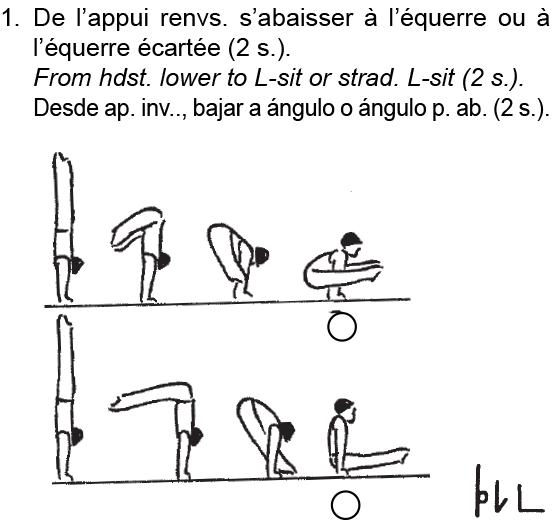 | Floor | Non-acrobatic Elements | From hdst. lower to L-sit or strad. L-sit 2 s. | A | ||
| 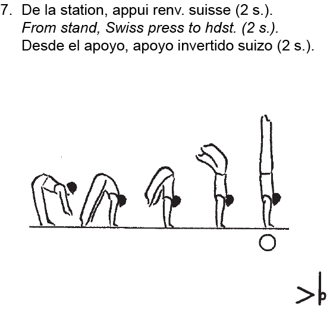 | Floor | Non-acrobatic Elements | From stand, Swiss press to hdst. 2 s. | A | ||
| 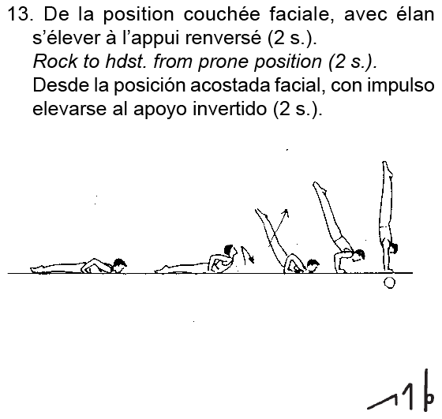 | Floor | Non-acrobatic Elements | Rock to hdst. from prone position 2 s. | A | ||
| 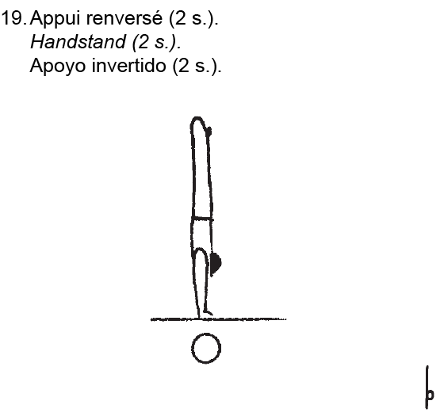 | Floor | Non-acrobatic Elements | Handstand 2 s. | A | ||
| 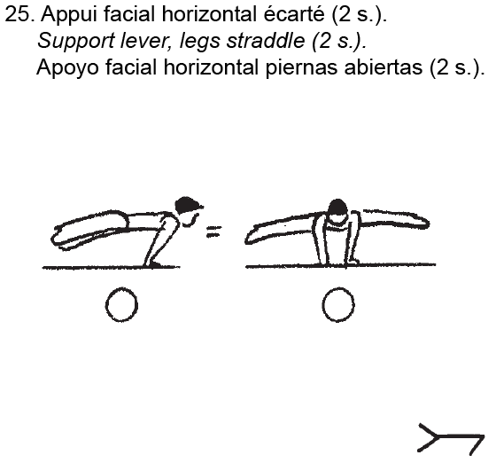 | Floor | Non-acrobatic Elements | Support lever, legs straddle 2 s. | A | ||
| 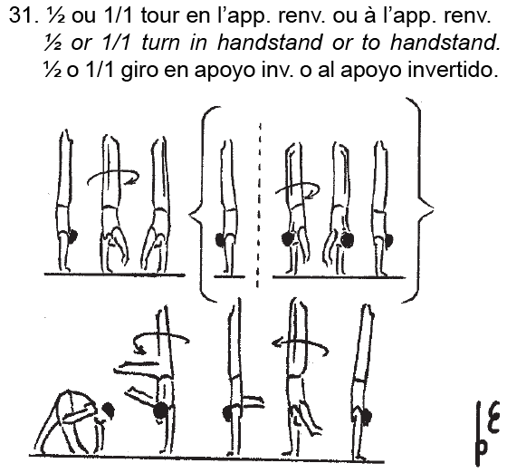 | Floor | Non-acrobatic Elements | ½ or 1/1 turn in handstand or to handstand. | A | ||
| 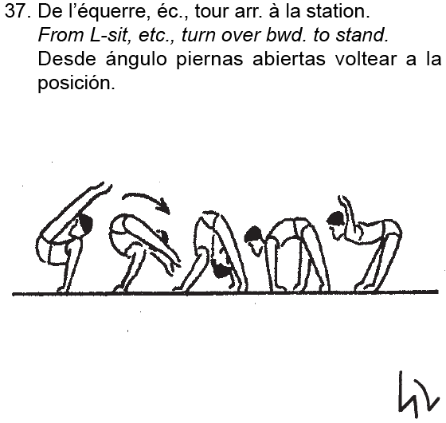 | Floor | Non-acrobatic Elements | From L-sit, etc., turn over bwd. to stand. | A | ||
 |
Floor | Non-acrobatic Elements | From stand or rear support, push off 1 foot through hdst. or back walkover | A | ||
 |
Floor | Non-acrobatic Elements | Forward walkover. | A | ||
| 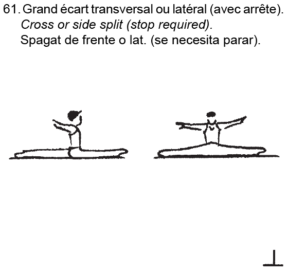 | Floor | Non-acrobatic Elements | Cross or side split stop required. | A | ||
| 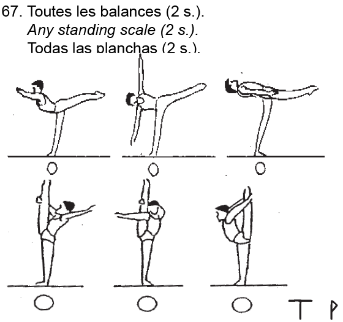 | Floor | Non-acrobatic Elements | Any standing scale 2 s. | A | ||
 |
Floor | Non-acrobatic Elements | Jump bwd. to front support. | A | ||
| Floor | Non-acrobatic Elements | Butterfly. | A | |||
| 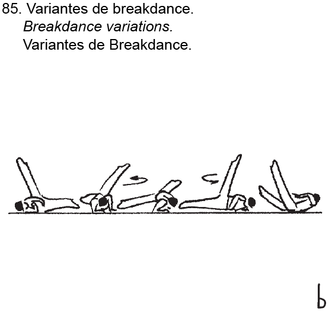 | Floor | Non-acrobatic Elements | Breakdance variations. | A | ||
| 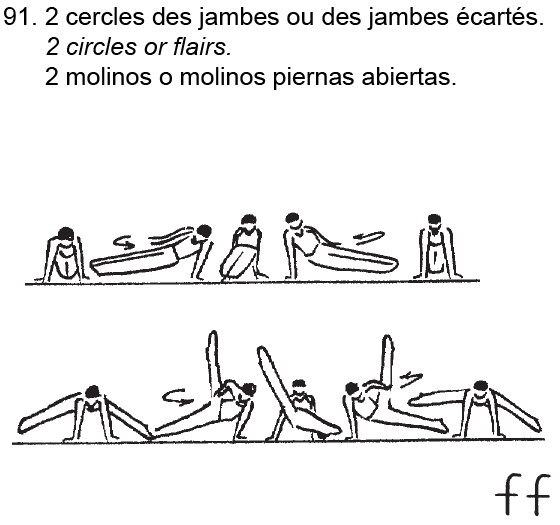 | Floor | Non-acrobatic Elements | 2 circles or flairs. | A | ||
| 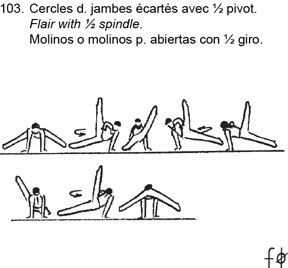 | Floor | Non-acrobatic Elements | Flair with ½ spindle. | A | ||
| 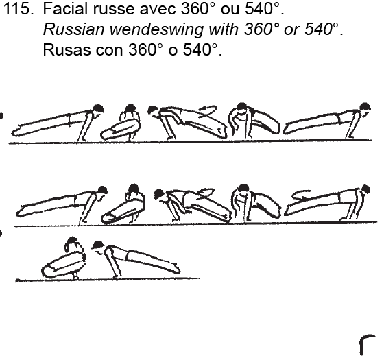 | Floor | Non-acrobatic Elements | Russian wendeswing with 360° or 540°. | A | ||
| 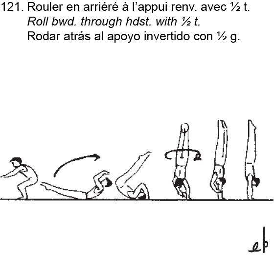 | Floor | Non-acrobatic Elements | Roll bwd. through hdst. with ½ t. | A | ||
| 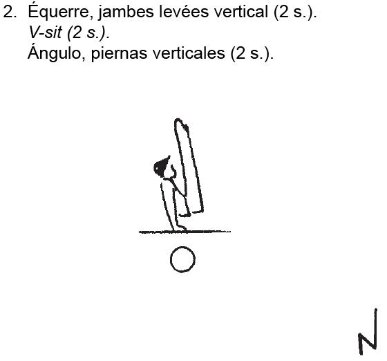 | Floor | Non-acrobatic Elements | V-sit 2 s. | A | ||
| Floor | Non-acrobatic Elements | Piked body, str. arm or str. body, bent arm press to hdst. with legs together 2 s. | A | |||
| 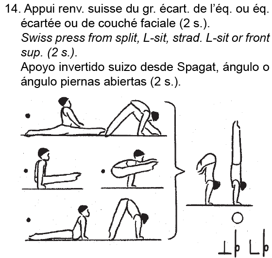 | Floor | Non-acrobatic Elements | Swiss press from split, L-sit, strad. L-sit or front sup. 2 s. | A | ||
| 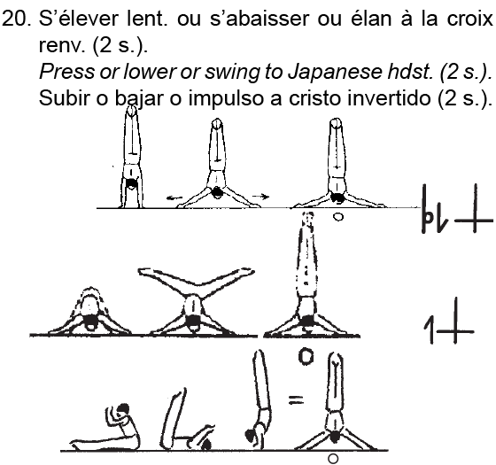 | Floor | Non-acrobatic Elements | Press or lower or swing to Japanese hdst. 2 s. | A | ||
| 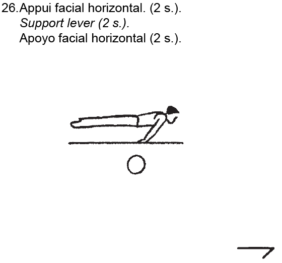 | Floor | Non-acrobatic Elements | Support lever 2 s. | A | ||
| 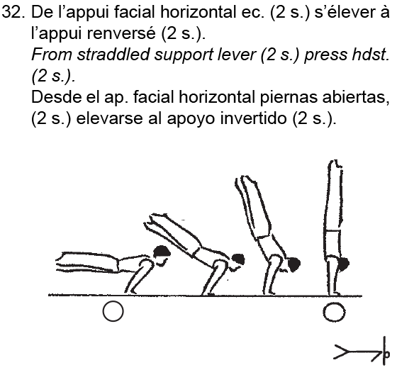 | Floor | Non-acrobatic Elements | From straddled support lever 2 s. press hdst. 2 s. | A | ||
| 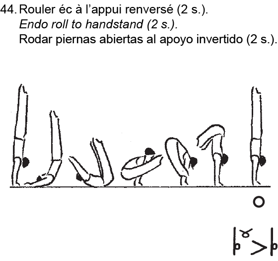 | Floor | Non-acrobatic Elements | Endo roll to handstand 2 s. | A | ||
| 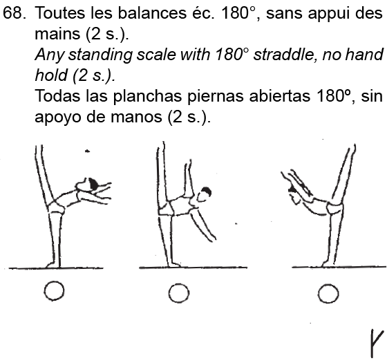 | Floor | Non-acrobatic Elements | Any standing scale with 180° straddle, no hand hold 2 s. | A | ||
| 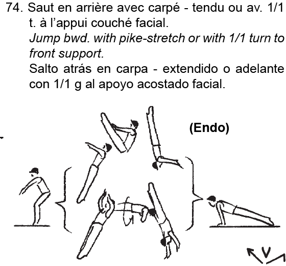 | Floor | Non-acrobatic Elements | Jump bwd. with pike-stretch or with 1/1 turn to front support | Endo | A | |
| 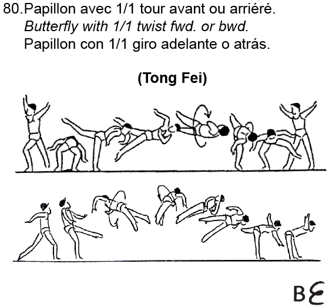 | Floor | Non-acrobatic Elements | Butterfly with 1/1 twist fwd. or bwd. | Tong Fei | A | |
| 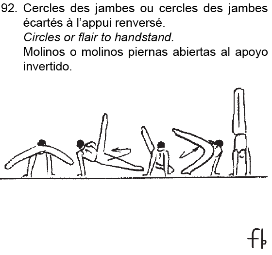 | Floor | Non-acrobatic Elements | Circles or flair to handstand. | A | ||
| 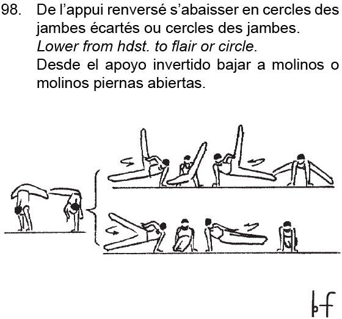 | Floor | Non-acrobatic Elements | Lower from hdst. to flair or circle. | A | ||
| 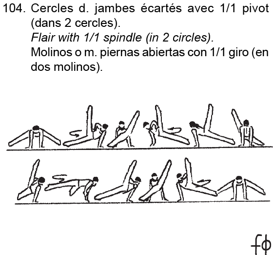 | Floor | Non-acrobatic Elements | Flair with 1/1 spindle in 2 circles. | A | ||
| 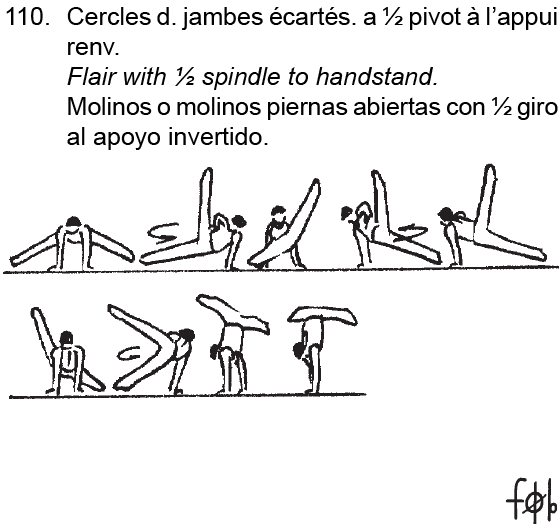 | Floor | Non-acrobatic Elements | Flair with ½ spindle to handstand. | A | ||
| 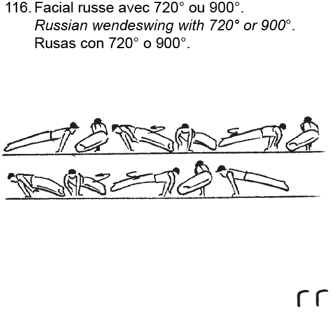 | Floor | Non-acrobatic Elements | Russian wendeswing with 720° or 900°. | A | ||
| 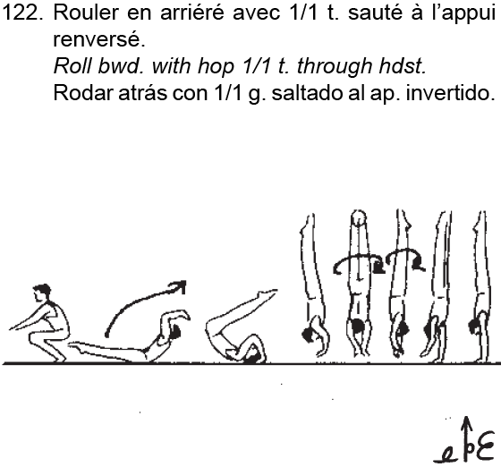 | Floor | Non-acrobatic Elements | Roll bwd. with hop 1/1 t. through hdst. | Manna | A | |
| 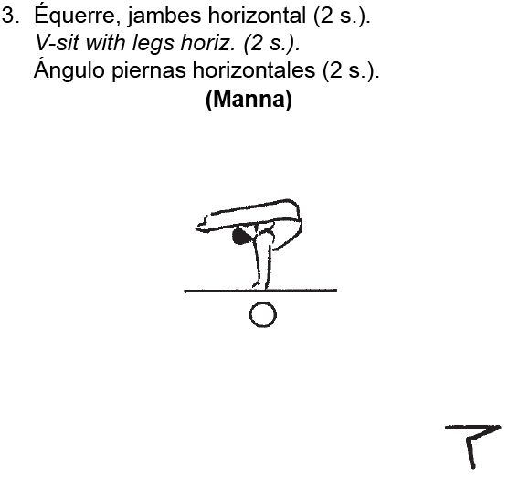 | Floor | Non-acrobatic Elements | V-sit with legs horiz. 2 s. | C | ||
| 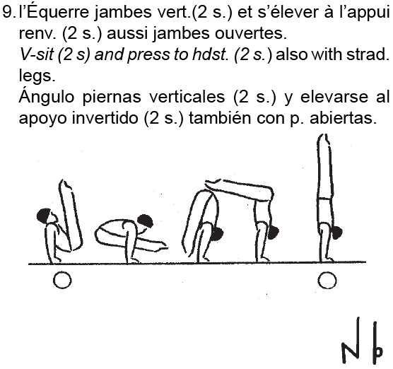 | Floor | Non-acrobatic Elements | V-sit 2 s and press to hdst. 2 s. also with strad. legs. | C | ||
| 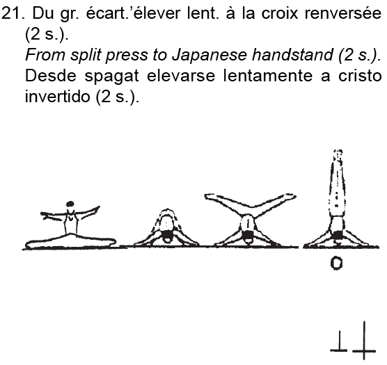 | Floor | Non-acrobatic Elements | From split press to Japanese handstand 2 s. | C | ||
| 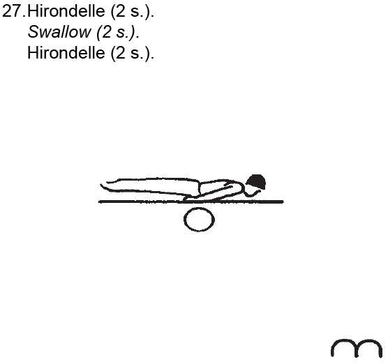 | Floor | Non-acrobatic Elements | Swallow 2 s. | C | ||
| 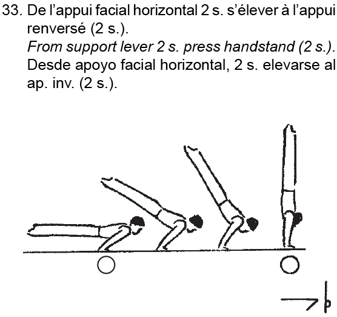 | Floor | Non-acrobatic Elements | From support lever 2 s. press handstand 2 s. | C | ||
| 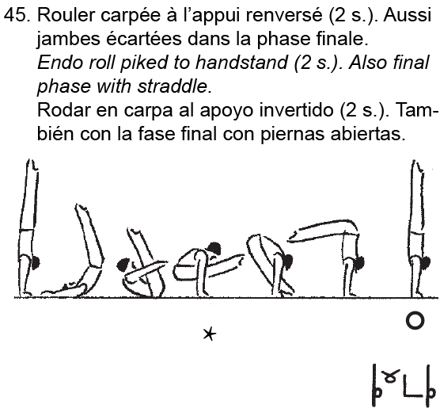 | Floor | Non-acrobatic Elements | Endo roll piked to handstand 2 s. Also final phase with straddle | C | ||
| 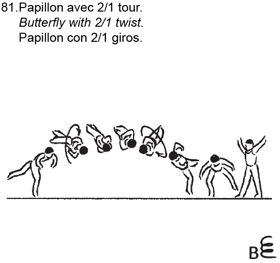 | Floor | Non-acrobatic Elements | Butterfly with 2/1 twist. | C | ||
| 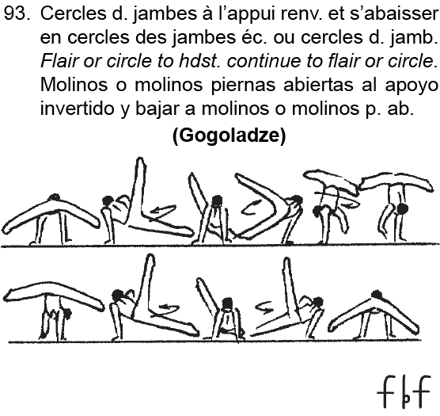 | Floor | Non-acrobatic Elements | Flair or circle to hdst. continue to flair or circle. | Gogoladze | C | |
| 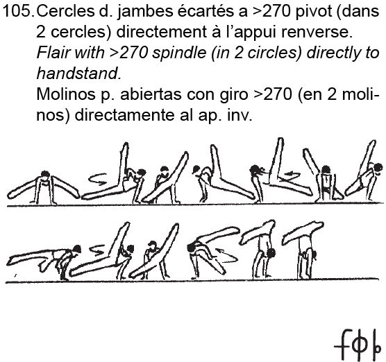 | Floor | Non-acrobatic Elements | Flair with >270 spindle in 2 circles directly to handstand | C | ||
| 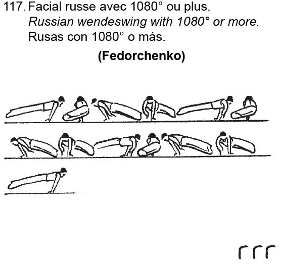 | Floor | Non-acrobatic Elements | Russian wendeswing with 1080° or more. | Fedorchenko | C | |
| 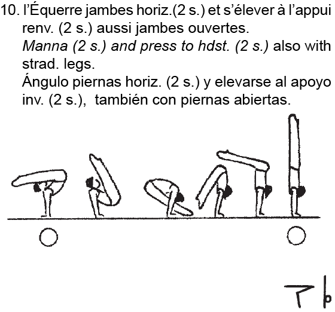 | Floor | Non-acrobatic Elements | Manna 2 s. and press to hdst. 2 s. also with strad. legs | D | ||
| 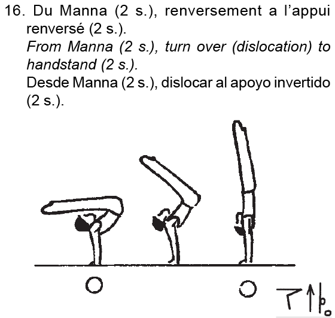 | Floor | Non-acrobatic Elements | From Manna 2 s., turn over dislocation to handstand 2 s. | D | ||
| 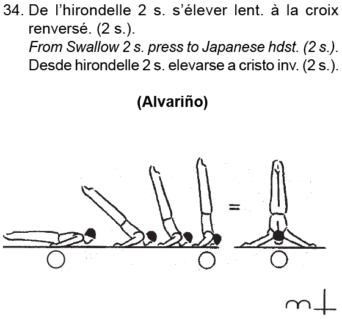 | Floor | Non-acrobatic Elements | From Swallow 2 s. press to Japanese hdst. 2 s. | Alvariño | D | |
| 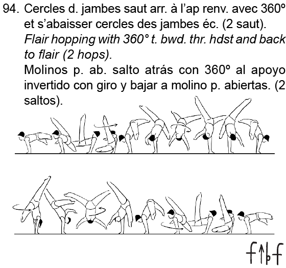 | Floor | Non-acrobatic Elements | Flair hopping with 360° t. bwd. thr. hdst and back to flair 2 hops. | D | ||
| 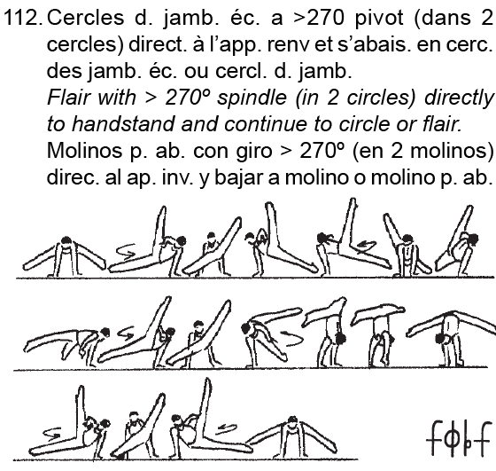 | Floor | Non-acrobatic Elements | Flair with > 270º spindle in 2 circles directly to handstand and continue to circle or flair. | D | ||
| 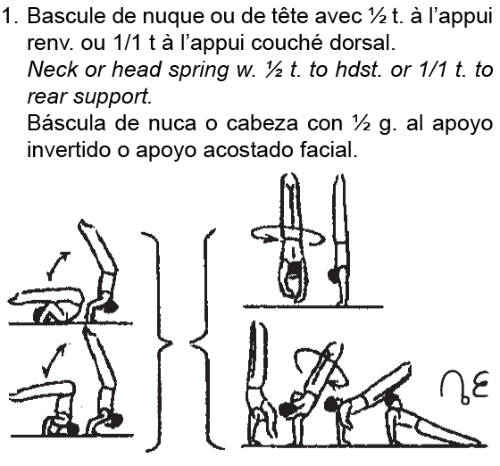 | Floor | Acrobatic elements forward saltos and handsprings & fwd. rollout elements no salto | Neck or head spring w. ½ t. to hdst. or 1/1 t. to rear support | A | ||
| 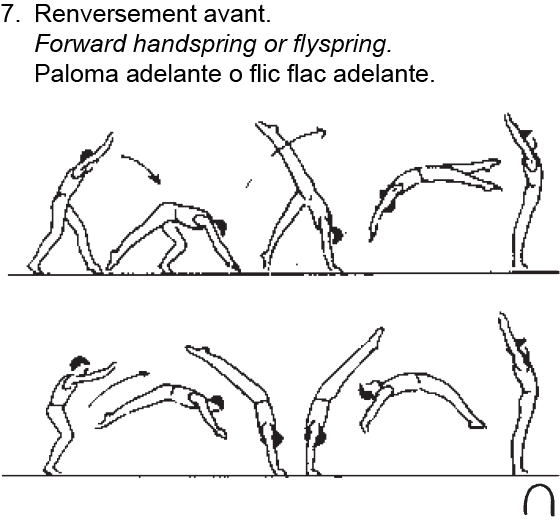 | Floor | Acrobatic elements forward saltos and handsprings & fwd. rollout elements no salto | Forward handspring or flyspring | A | ||
| 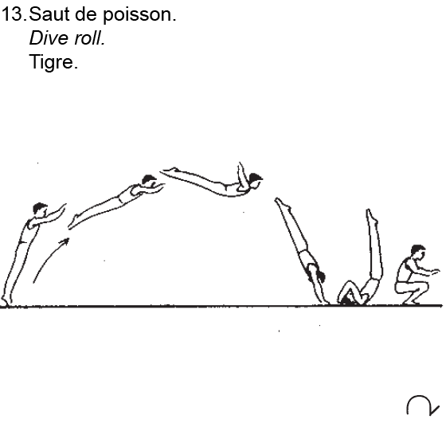 | Floor | Acrobatic elements forward saltos and handsprings & fwd. rollout elements no salto | Dive roll. | A | ||
| 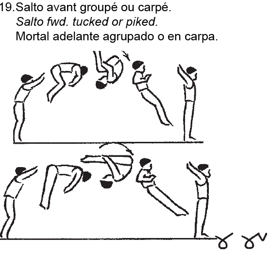 | Floor | Acrobatic elements forward saltos and handsprings & fwd. rollout elements no salto | Salto fwd. tucked or piked. | A | ||
| 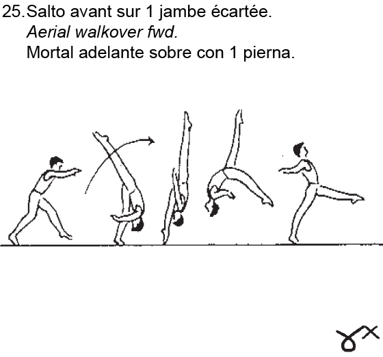 | Floor | Acrobatic elements forward saltos and handsprings & fwd. rollout elements no salto | Aerial walkover fwd. | A | ||
| 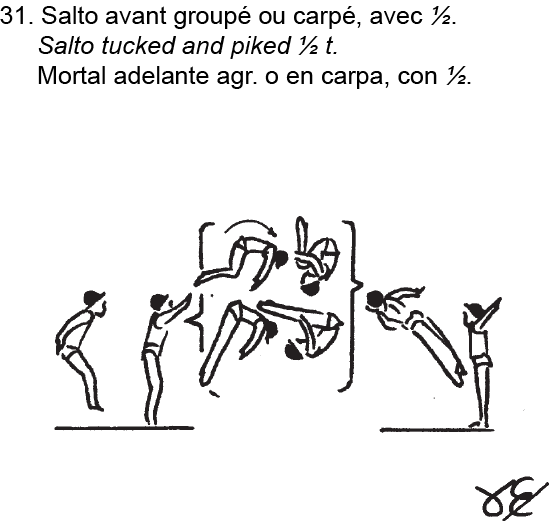 | Floor | Acrobatic elements forward saltos and handsprings & fwd. rollout elements no salto | Salto tucked and piked ½ t. | A | ||
| Floor | Acrobatic elements forward saltos and handsprings & fwd. rollout elements no salto | Jump with 1/1 twist to fwd. hdsp. | B | |||
| Floor | Acrobatic elements forward saltos and handsprings & fwd. rollout elements no salto | Salto fwd. stretched. | B | |||
| Floor | Acrobatic elements forward saltos and handsprings & fwd. rollout elements no salto | Salto tucked with 1/1 t. | B | |||
| Floor | Acrobatic elements forward saltos and handsprings & fwd. rollout elements no salto | Salto fwd. str. with ½ t. | B | |||
| Floor | Acrobatic elements forward saltos and handsprings & fwd. rollout elements no salto | Salto tucked 3/2 t. | B | |||
| Floor | Acrobatic elements forward saltos and handsprings & fwd. rollout elements no salto | Salto fwd. t. or p. to front support. | B | |||
| Floor | Acrobatic elements forward saltos and handsprings & fwd. rollout elements no salto | Salto fwd. str. to front support. | C | |||
| Floor | Acrobatic elements forward saltos and handsprings & fwd. rollout elements no salto | Salto fwd. str. with 1/1 t. | C | |||
| Floor | Acrobatic elements forward saltos and handsprings & fwd. rollout elements no salto | Salto fwd. str. with 3/2 t. | C | |||
| Floor | Acrobatic elements forward saltos and handsprings & fwd. rollout elements no salto | Salto fwd. t., p or str. with 1/1 t. to front support. | C | |||
| Floor | Acrobatic elements forward saltos and handsprings & fwd. rollout elements no salto | Handspring salto fwd. tuck Marinich style. | Morandi | D | ||
| Floor | Acrobatic elements forward saltos and handsprings & fwd. rollout elements no salto | Double salto fwd. tucked. | D | |||
| Floor | Acrobatic elements forward saltos and handsprings & fwd. rollout elements no salto | Salto fwd. str. with 2/1 t. | D | |||
 |
Floor | Acrobatic elements forward saltos and handsprings & fwd. rollout elements no salto | Jump fwd. with ½ t. to dbl. salto bwd. t. or p. | D | ||
| Floor | Acrobatic elements forward saltos and handsprings & fwd. rollout elements no salto | Double salto fwd. piked. | E | |||
| Floor | Acrobatic elements forward saltos and handsprings & fwd. rollout elements no salto | Double salto fwd. tucked with ½ t. | E | |||
| Floor | Acrobatic elements forward saltos and handsprings & fwd. rollout elements no salto | Salto fwd. str. with 5/2 t. | E | |||
| Floor | Acrobatic elements forward saltos and handsprings & fwd. rollout elements no salto | Double salto fwd. piked with ½ t. | F | |||
| Floor | Acrobatic elements forward saltos and handsprings & fwd. rollout elements no salto | Salto fwd. str. with 3/1 t. | Shirai 2 | F | ||
| Floor | Acrobatic elements forward saltos and handsprings & fwd. rollout elements no salto | Double salto fwd. tucked with 1/1 turn. | F | |||
| Floor | Acrobatic elements backward saltos and handsprings, & Arabian elements | Salto backwards tucked or piked. | A | |||
| Floor | Acrobatic elements backward saltos and handsprings, & Arabian elements | Salto backwards tucked or piked w. ½ t. | A | |||
| Floor | Acrobatic elements backward saltos and handsprings, & Arabian elements | Back handspring. | A | |||
| Floor | Acrobatic elements backward saltos and handsprings, & Arabian elements | Jump bwd. with ½ t. to roll fwd. | A | |||
| Floor | Acrobatic elements backward saltos and handsprings, & Arabian elements | Jump bwd. with ½ t. to handspring forward. | A | |||
| Floor | Acrobatic elements backward saltos and handsprings, & Arabian elements | Salto backwards stretched. | B | |||
| Floor | Acrobatic elements backward saltos and handsprings, & Arabian elements | Salto backwards str. w. ½ t. | B | |||
| Floor | Acrobatic elements backward saltos and handsprings, & Arabian elements | Tempo salto bwd. | B | |||
| Floor | Acrobatic elements backward saltos and handsprings, & Arabian elements | Salto backwards tucked w. 3/2 t. . | B | |||
| Floor | Acrobatic elements backward saltos and handsprings, & Arabian elements | Salto bwd. str. with 1/1 t. | B | |||
| Floor | Acrobatic elements backward saltos and handsprings, & Arabian elements | Jump bwd. with ½ t. to salto fwd. t. or p. to f. sup. | B | |||
| Floor | Acrobatic elements backward saltos and handsprings, & Arabian elements | Double salto bwd. tucked. | C | |||
| Floor | Acrobatic elements backward saltos and handsprings, & Arabian elements | Double salto bwd. piked. | C | |||
| Floor | Acrobatic elements backward saltos and handsprings, & Arabian elements | Salto bwd. str. with 3/2 t. | C | |||
| Floor | Acrobatic elements backward saltos and handsprings, & Arabian elements | Salto bwd. str. with 2/1 t. | C | |||
| Floor | Acrobatic elements backward saltos and handsprings, & Arabian elements | Double salto bwd. t. or piked with 1/1 t. Also Arabian double t. or p. ½ t. | D | |||
| Floor | Acrobatic elements backward saltos and handsprings, & Arabian elements | Arabian double tucked or piked or double salto bwd. t. or p. with ½ t. | D | |||
 |
Floor | Acrobatic elements backward saltos and handsprings, & Arabian elements | Salto bwd. str. with 5/2 t. | D | ||
| Floor | Acrobatic elements backward saltos and handsprings, & Arabian elements | Salto bwd. str. with 3/1 t. | D | |||
| Floor | Acrobatic elements backward saltos and handsprings, & Arabian elements | Double salto bwd. stretched. | D | |||
| Floor | Acrobatic elements backward saltos and handsprings, & Arabian elements | Double salto bwd. tucked with 2/1 t. | E | |||
| Floor | Acrobatic elements backward saltos and handsprings, & Arabian elements | Double salto bwd. t. with 3/2 t. or Salto bwd. str. 3/2 to fwd. salto tucked | Korosteljev | E | ||
| Floor | Acrobatic elements backward saltos and handsprings, & Arabian elements | Salto bwd. str. with 7/2 t. | E | |||
 |
Floor | Acrobatic elements backward saltos and handsprings, & Arabian elements | Double salto straddled with 1/1 t | Lou Yun | E | |
| Floor | Acrobatic elements backward saltos and handsprings, & Arabian elements | Arabian Jump bwd. to dbl. salto fwd. str. or double salto bwd. stretched with ½ t | Tamayo | E | ||
| Floor | Acrobatic elements backward saltos and handsprings, & Arabian elements | Double salto bwd. stretched with 1/1 t. or arabian Jump bwd. to dbl. salto fwd. str. with ½ t | Penev | E | ||
| Floor | Acrobatic elements backward saltos and handsprings, & Arabian elements | Double salto bwd. tucked with 5/2 t. | F | |||
| Floor | Acrobatic elements backward saltos and handsprings, & Arabian elements | Salto bwd. str. with 4/1 t. | Shirai / Nguyen | F | ||
| Floor | Acrobatic elements backward saltos and handsprings, & Arabian elements | Salto bwd. str. with 2/1 t and salto bwd piked. | Kolyvanov | F | ||
| Floor | Acrobatic elements backward saltos and handsprings, & Arabian elements | Double salto bwd. str. with 3/2 t. or arabian Jump bwd. to dbl. salto fwd. str. with 1/1 t. | Hypolito | F | ||
| Floor | Acrobatic elements backward saltos and handsprings, & Arabian elements | Double salto bwd. str. with 2/1 t. | F | |||
| Floor | Acrobatic elements backward saltos and handsprings, & Arabian elements | Double salto bwd. tucked with 3/1 t. | Ri Jong Song | G | ||
| Floor | Acrobatic elements backward saltos and handsprings, & Arabian elements | Double salto bwd. str. with 5/2 t. | G | |||
| Floor | Acrobatic elements backward saltos and handsprings, & Arabian elements | Triple salto bwd. tucked. | Liukin | H | ||
| Floor | Acrobatic elements backward saltos and handsprings, & Arabian elements | Double salto bwd. str. with 3/1 t. | Shirai 3 | H | ||
| Pommel | Single leg swings and scissors | Scissor forward. | A | |||
| Pommel | Single leg swings and scissors | Scissor forward with ½ t. | A | |||
| Pommel | Single leg swings and scissors | Scissor backward. | A | |||
| Pommel | Single leg swings and scissors | Scissor backward with ½ turn. | B | |||
| Pommel | Single leg swings and scissors | Scissor forward with hop swd. also with 1/2 t.. | B | |||
| Pommel | Single leg swings and scissors | Double scissor fwd.¼ t. fwd. a. ¼ t. bwd.. | B | |||
| Pommel | Single leg swings and scissors | Scissor bwd.with hop swd.also with ½ t.. | B | |||
| Pommel | Single leg swings and scissors | Double scissor bwd. ¼ t. fwd. a. ¼ t. bwd. | B | |||
| Pommel | Single leg swings and scissors | Leg cut or undercut bwd. through hdst. and lower to support w. strad. legs | C | |||
| Pommel | Single leg swings and scissors | Double Scissor Fwd. with Travel Sideways through Handstand. | Stepanyan | C | ||
| Pommel | Single leg swings and scissors | Scissor fwd. with hop swd. from one end to the other 3/3. | C | |||
| Pommel | Single leg swings and scissors | Double scissor fwd. ¼ t. fwd. a. ¼ t. bwd. with travel sdw | C | |||
| Pommel | Single leg swings and scissors | Scissor bwd. with hop swd. from one end to the other 1-2 to 4-5. | C | |||
| Pommel | Single leg swings and scissors | Leg cut or undercut bwd. through hdst. and lower to flair or circle | D | |||
| Pommel | Single leg swings and scissors | Scissor fwd. w. ¼ t. through hstd. on 1 p., lower to sup. w. strad. legs on the other arm. | Li Ning | D | ||
| Pommel | Single leg swings and scissors | Double scissor forward with hop sideways from one end to the other 3/3. | Mikulak | D | ||
 |
Pommel | Single leg swings and scissors | Swing bwd. w. ¼ t. through hstd. on 1 p., lower to sup. w. strad. legs on the other arm | D | ||
| Pommel | Single leg swings and scissors | Scissor fwd. 1/4 t. to hdst., 1/4 t. and straddle down bwd on 1 arm on the other Rings | Bryan | D | ||
| Pommel | Circle and flairs, with and/or without spindles and handstands, Kehrswings, Russian w., flops and combined elements | Scissor bwd. ¼ t. to hdst., ¼ t. and straddle down bwd on 1 arm on the other Rings. | A | |||
| Pommel | Circle and flairs, with and/or without spindles and handstands, Kehrswings, Russian w., flops and combined elements | Any circle or flair in side support | Thomas | A | ||
| Pommel | Circle and flairs, with and/or without spindles and handstands, Kehrswings, Russian w., flops and combined elements | Circles in cross support frontways on end. | A | |||
| Pommel | Circle and flairs, with and/or without spindles and handstands, Kehrswings, Russian w., flops and combined elements | Circles in cross support rearways on end. | A | |||
| Pommel | Circle and flairs, with and/or without spindles and handstands, Kehrswings, Russian w., flops and combined elements | Circle in side sup., ¼ spindle to cross sup. | A | |||
| Pommel | Circle and flairs, with and/or without spindles and handstands, Kehrswings, Russian w., flops and combined elements | Cross support on end, circle with ¼ spindle to side support. | A | |||
| Pommel | Circle and flairs, with and/or without spindles and handstands, Kehrswings, Russian w., flops and combined elements | Double rear kehr | A | |||
| Pommel | Circle and flairs, with and/or without spindles and handstands, Kehrswings, Russian w., flops and combined elements | Wendeswing fwd. w. ½ t. to sup. fw. on the end, from side support using 1 or 2 Ringss | A | |||
| Pommel | Circle and flairs, with and/or without spindles and handstands, Kehrswings, Russian w., flops and combined elements | Schwabenflank. | A | |||
| Pommel | Circle and flairs, with and/or without spindles and handstands, Kehrswings, Russian w., flops and combined elements | Russian wendeswing with 180° or 270° | A | |||
| Pommel | Circle and flairs, with and/or without spindles and handstands, Kehrswings, Russian w., flops and combined elements | On the leather, Russian wendeswing with 180°, or 270° also with travel | B | |||
| Pommel | Circle and flairs, with and/or without spindles and handstands, Kehrswings, Russian w., flops and combined elements | Circle in side support on 1 Rings. | B | |||
| Pommel | Circle and flairs, with and/or without spindles and handstands, Kehrswings, Russian w., flops and combined elements | Circle with support outside Ringss or between the Ringss. | B | |||
| Pommel | Circle and flairs, with and/or without spindles and handstands, Kehrswings, Russian w., flops and combined elements | Circles in cross support on 1 Rings from or to ¼ t. fwd.. | B | |||
| Pommel | Circle and flairs, with and/or without spindles and handstands, Kehrswings, Russian w., flops and combined elements | Circles in cross support between the Ringss. | B | |||
| Pommel | Circle and flairs, with and/or without spindles and handstands, Kehrswings, Russian w., flops and combined elements | Side support, ½ spindle | B | |||
| Pommel | Circle and flairs, with and/or without spindles and handstands, Kehrswings, Russian w., flops and combined elements | Cross support on end, ½ spindle. | B | |||
| Pommel | Circle and flairs, with and/or without spindles and handstands, Kehrswings, Russian w., flops and combined elements | Flair or circle through hdst. and lower to sup. w. strad. legs. | B | |||
| Pommel | Circle and flairs, with and/or without spindles and handstands, Kehrswings, Russian w., flops and combined elements | Direct Stöckli A DSA. | B | |||
| Pommel | Circle and flairs, with and/or without spindles and handstands, Kehrswings, Russian w., flops and combined elements | Direct Stöckli B DSB. | B | |||
| Pommel | Circle and flairs, with and/or without spindles and handstands, Kehrswings, Russian w., flops and combined elements | Kehrswing bwd. hop with ½ t. on the Ringss. | B | |||
| Pommel | Circle and flairs, with and/or without spindles and handstands, Kehrswings, Russian w., flops and combined elements | Kehr with 270º t. on 1 p. Sohn technique from cross to side support. | B | |||
| Pommel | Circle and flairs, with and/or without spindles and handstands, Kehrswings, Russian w., flops and combined elements | Direct Tramlot. | B | |||
| Pommel | Circle and flairs, with and/or without spindles and handstands, Kehrswings, Russian w., flops and combined elements | Reverse Stöckli, 180° or 270° turn in one circle. | B | |||
| Pommel | Circle and flairs, with and/or without spindles and handstands, Kehrswings, Russian w., flops and combined elements | Double Swiss. | B | |||
| Pommel | Circle and flairs, with and/or without spindles and handstands, Kehrswings, Russian w., flops and combined elements | Czechkehre on the leather or Ringss. | B | |||
| Pommel | Circle and flairs, with and/or without spindles and handstands, Kehrswings, Russian w., flops and combined elements | Russian wendeswing with 360° or 540°. | B | |||
| Pommel | Circle and flairs, with and/or without spindles and handstands, Kehrswings, Russian w., flops and combined elements | On the leather , Russian wendeswing with 360° or 540°. | B | |||
| Pommel | Circle and flairs, with and/or without spindles and handstands, Kehrswings, Russian w., flops and combined elements | Russian wendeswing with 180° or 270° on 1 p. or between the Ringss. | C | |||
| Pommel | Circle and flairs, with and/or without spindles and handstands, Kehrswings, Russian w., flops and combined elements | Flair or circle through hdst. with or without ½ t. and lower to flair or circle. | Tippelt | C | ||
| Pommel | Circle and flairs, with and/or without spindles and handstands, Kehrswings, Russian w., flops and combined elements | Flair with hop travel bwd. through hdst. and lower to sup. w. straddle legs | C | |||
| Pommel | Circle and flairs, with and/or without spindles and handstands, Kehrswings, Russian w., flops and combined elements | Reverse Stöckli or DSA strad. through hdst. and lower to sup. w. strad. legs or circle. | C | |||
| Pommel | Circle and flairs, with and/or without spindles and handstands, Kehrswings, Russian w., flops and combined elements | Kehr with 270º t. on 1 p. Sohn technique from side to cross support. | C | |||
| Pommel | Circle and flairs, with and/or without spindles and handstands, Kehrswings, Russian w., flops and combined elements | Reverse Stöckli with 270° t. to 1 Rings. | C | |||
| Pommel | Circle and flairs, with and/or without spindles and handstands, Kehrswings, Russian w., flops and combined elements | Russian wendeswing with 720° or 900°. | C | |||
| Pommel | Circle and flairs, with and/or without spindles and handstands, Kehrswings, Russian w., flops and combined elements | On the leather, Russian wendeswing with 720° or 900°. | C | |||
| Pommel | Circle and flairs, with and/or without spindles and handstands, Kehrswings, Russian w., flops and combined elements | Russian wendeswing with 360° or 540° on 1 Rings or between the Ringss | D | |||
 |
Pommel | Circle and flairs, with and/or without spindles and handstands, Kehrswings, Russian w., flops and combined elements | Any side support 1/1 spindle w. legs straddle inside max. 2 circles. | D | ||
 |
Pommel | Circle and flairs, with and/or without spindles and handstands, Kehrswings, Russian w., flops and combined elements | Any cross support 1/1 spindle within max. 2 circles. also with ⅓, ½ or 2/3 travel. | Magyar/Sellathurai | D | |
| Pommel | Circle and flairs, with and/or without spindles and handstands, Kehrswings, Russian w., flops and combined elements | Flair with hop travel bwd. through hdst. and lower to circles or flairs | D | |||
| Pommel | Circle and flairs, with and/or without spindles and handstands, Kehrswings, Russian w., flops and combined elements | Czechkehre outside p. | Pinheiro | D | ||
| Pommel | Circle and flairs, with and/or without spindles and handstands, Kehrswings, Russian w., flops and combined elements | Russian wendeswing with 1080° or more. | D | |||
| Pommel | Circle and flairs, with and/or without spindles and handstands, Kehrswings, Russian w., flops and combined elements | On the leather, Russian wendeswing with 1080° or more. | D | |||
| Pommel | Circle and flairs, with and/or without spindles and handstands, Kehrswings, Russian w., flops and combined elements | 720° or 900° Russian wendeswing on 1 Rings or between the Ringss | E | |||
| Pommel | Circle and flairs, with and/or without spindles and handstands, Kehrswings, Russian w., flops and combined elements | Any side support 1/1 spindle with hand support to the other side and return max. 2 flairs or circles. | Eichorn | E | ||
| Pommel | Circle and flairs, with and/or without spindles and handstands, Kehrswings, Russian w., flops and combined elements | Cross support, 1/1 spindle with hands between the Ringss max. 2 circles. also with ⅓ travel. | Sellathurai 2 | E | ||
| Pommel | Circle and flairs, with and/or without spindles and handstands, Kehrswings, Russian w., flops and combined elements | 1/1 spindle w. legs straddle or together on the Ringss inside max. 2 circles. | Berki | E | ||
| Pommel | Circle and flairs, with and/or without spindles and handstands, Kehrswings, Russian w., flops and combined elements | Kehr with 1/1 turn on 1 Rings. | Sohn | E | ||
| Pommel | Circle and flairs, with and/or without spindles and handstands, Kehrswings, Russian w., flops and combined elements | Reverse Stöckli with 360° t. on 1 Rings | E | |||
| Pommel | Circle and flairs, with and/or without spindles and handstands, Kehrswings, Russian w., flops and combined elements | 1080º Russian wendeswing or more on 1 Rings or between the Ringss | F | |||
| Pommel | Circle and flairs, with and/or without spindles and handstands, Kehrswings, Russian w., flops and combined elements | Side support, 1/1 spindle with both Ringss between the hands flair or circle. | F | |||
 |
Pommel | Travel type elements, including Krolls, Tong Fei, Wu Guonian, Roth and Traveling Spindles | Reverse Stöckli, DSA or Rings circle strad. through hdst., 3/3 travel fwd.- bwd, 360º turn to flairs | Busnari | A | |
| Pommel | Travel type elements, including Krolls, Tong Fei, Wu Guonian, Roth and Traveling Spindles | Circles with travel fwd. in side support also with ¼ t. | A | |||
| Pommel | Travel type elements, including Krolls, Tong Fei, Wu Guonian, Roth and Traveling Spindles | Circles with travel bwd. in side support. | A | |||
| Pommel | Travel type elements, including Krolls, Tong Fei, Wu Guonian, Roth and Traveling Spindles | Travel bwd. in cross sup. from one horse part or Rings to another ⅓. | B | |||
| Pommel | Travel type elements, including Krolls, Tong Fei, Wu Guonian, Roth and Traveling Spindles | Circles with travel fwd. in side support 3/3 | B | |||
| Pommel | Travel type elements, including Krolls, Tong Fei, Wu Guonian, Roth and Traveling Spindles | Circles with hop travel fwd. in side support | B | |||
| Pommel | Travel type elements, including Krolls, Tong Fei, Wu Guonian, Roth and Traveling Spindles | Circles with travel bwd. in side support 3/3. | B | |||
| Pommel | Travel type elements, including Krolls, Tong Fei, Wu Guonian, Roth and Traveling Spindles | Circles with travel bwd. with hop. | B | |||
| Pommel | Travel type elements, including Krolls, Tong Fei, Wu Guonian, Roth and Traveling Spindles | All travels with ½ spindle in cross support 1/3 travel. | B | |||
| Pommel | Travel type elements, including Krolls, Tong Fei, Wu Guonian, Roth and Traveling Spindles | Travel fwd. or bwd. with ¼ spindle to side support. | B | |||
| Pommel | Travel type elements, including Krolls, Tong Fei, Wu Guonian, Roth and Traveling Spindles | Travel fwd. in cross support ½ or 2/3. | B | |||
| Pommel | Travel type elements, including Krolls, Tong Fei, Wu Guonian, Roth and Traveling Spindles | Travel bwd. in cross support ½ or 2/3. | C | |||
| Pommel | Travel type elements, including Krolls, Tong Fei, Wu Guonian, Roth and Traveling Spindles | Circles with travel fwd. in side support 3/3, hands between Ringss | C | |||
| Pommel | Travel type elements, including Krolls, Tong Fei, Wu Guonian, Roth and Traveling Spindles | Circles with hop tr. fwd. 2x in side support 3/3 | C | |||
| Pommel | Travel type elements, including Krolls, Tong Fei, Wu Guonian, Roth and Traveling Spindles | Circles with travel bwd. in side support 3/3, hands between Ringss | C | |||
| Pommel | Travel type elements, including Krolls, Tong Fei, Wu Guonian, Roth and Traveling Spindles | Circles with travel bwd. with hop 2x. | C | |||
| Pommel | Travel type elements, including Krolls, Tong Fei, Wu Guonian, Roth and Traveling Spindles | All travels with ½ spindle in cross support ½ or 2/3 travel. | C | |||
| Pommel | Travel type elements, including Krolls, Tong Fei, Wu Guonian, Roth and Traveling Spindles | All travels with ½ spindle in side support. | C | |||
| Pommel | Travel type elements, including Krolls, Tong Fei, Wu Guonian, Roth and Traveling Spindles | ravel fwd. in cross support with support on leather, Rings, Rings, leather3/3 1-2-4-5 | C | |||
| Pommel | Travel type elements, including Krolls, Tong Fei, Wu Guonian, Roth and Traveling Spindles | Fr. cr. sup. on end, tr. fwd. in 2 circles to 1st p., to 2nd p., with ¼ turn to side sup. on other end 3/3. | Bilozerchev | C | ||
| Pommel | Travel type elements, including Krolls, Tong Fei, Wu Guonian, Roth and Traveling Spindles | Travel bwd. in cross sup with support on leather, Rings, Rings, leather3/3 5-4-2-1. | C | |||
| Pommel | Travel type elements, including Krolls, Tong Fei, Wu Guonian, Roth and Traveling Spindles | From support on end, kehr fwd. around 1st p., rev. Stöckli around 2nd p. to side sup., p. betw. hands. | Urzica | C | ||
| Pommel | Travel type elements, including Krolls, Tong Fei, Wu Guonian, Roth and Traveling Spindles | From sup. on 1 p., Russian wendeswing fwd. to other end without sup. on or btw. the p. side to side support, side to cross support, cross to side support. | C | |||
| Pommel | Travel type elements, including Krolls, Tong Fei, Wu Guonian, Roth and Traveling Spindles | From side support Rings between hand, russian wendeswing 360º with travel to the other end in side support | Kroll | D | ||
| Pommel | Travel type elements, including Krolls, Tong Fei, Wu Guonian, Roth and Traveling Spindles | From side sup. on 1 end., travel fwd. over both p. to sup. on other end 3/3 in 1 circle. | D | |||
| Pommel | Travel type elements, including Krolls, Tong Fei, Wu Guonian, Roth and Traveling Spindles | From sup. frontways on one end, travel hop over both p. to sup. frontways on other end. | D | |||
| Pommel | Travel type elements, including Krolls, Tong Fei, Wu Guonian, Roth and Traveling Spindles | From side sup. on 1 end., travel bwd. over both p. to side sup. on the other end 3/3 in 2 circles w | D | |||
| Pommel | Travel type elements, including Krolls, Tong Fei, Wu Guonian, Roth and Traveling Spindles | From side support on one end, travel hop over both p. to sup. frways on other end 1-2 to 4-5. | D | |||
| Pommel | Travel type elements, including Krolls, Tong Fei, Wu Guonian, Roth and Traveling Spindles | Cross travel fwd. 3/3 with ½ Spindle from one Rings over the other Rings. | Nin Reyes | D | ||
| Pommel | Travel type elements, including Krolls, Tong Fei, Wu Guonian, Roth and Traveling Spindles | Any other travel fwd. in cross support to other end 3/3. | Magyar | D | ||
| Pommel | Travel type elements, including Krolls, Tong Fei, Wu Guonian, Roth and Traveling Spindles | Any other travel bwd. in cross support to other end 3/3 | Sivado | D | ||
| Pommel | Travel type elements, including Krolls, Tong Fei, Wu Guonian, Roth and Traveling Spindles | Kehre fwd., rev. Stöckli, kehre fwd. | Moguilny | D | ||
| Pommel | Travel type elements, including Krolls, Tong Fei, Wu Guonian, Roth and Traveling Spindles | Kehre bwd., kehre fwd., kehre bwd. | Belenki | D | ||
| Pommel | Travel type elements, including Krolls, Tong Fei, Wu Guonian, Roth and Traveling Spindles | From sup. on end, Russian wendeswing fwd. to other end without sup. on or btw. the p. side to side support, side to cross, cross to side, cross to cross with full circle after | Tong Fei | D | ||
| Pommel | Travel type elements, including Krolls, Tong Fei, Wu Guonian, Roth and Traveling Spindles | Any Russian wend. with 360° t. and 3/3 travel. | Roth | D | ||
| Pommel | Travel type elements, including Krolls, Tong Fei, Wu Guonian, Roth and Traveling Spindles | Reverse Stöckli from cross support on one end to the other | E | |||
| Pommel | Travel type elements, including Krolls, Tong Fei, Wu Guonian, Roth and Traveling Spindles | From side sup. beside the p., travel hop o. 2 p. to sup. fwd on other end 1-1 to 5-5 | Yamawaki | E | ||
| Pommel | Travel type elements, including Krolls, Tong Fei, Wu Guonian, Roth and Traveling Spindles | From an end side travel with 2x ½ spindle to other end. | E | |||
| Pommel | Travel type elements, including Krolls, Tong Fei, Wu Guonian, Roth and Traveling Spindles | Travel 3/3 over both Ringss with ½ Spindle. | Nin Reyes 2 | E | ||
| Pommel | Travel type elements, including Krolls, Tong Fei, Wu Guonian, Roth and Traveling Spindles | 3/3 cross support travel fwd. with hop. | Driggs | E | ||
| Pommel | Travel type elements, including Krolls, Tong Fei, Wu Guonian, Roth and Traveling Spindles | 3/3 cross support travel fwd. in flairs. | E | |||
| Pommel | Travel type elements, including Krolls, Tong Fei, Wu Guonian, Roth and Traveling Spindles | Any other travel bwd. in cross support to other end 3/3 in flairs. | E | |||
| Pommel | Travel type elements, including Krolls, Tong Fei, Wu Guonian, Roth and Traveling Spindles | Any 3/3 travel in Russian type wendeswing with 720° or more turning | Wu Guonian | E | ||
| Pommel | Travel type elements, including Krolls, Tong Fei, Wu Guonian, Roth and Traveling Spindles | On the leather, from cross support, Russian wendeswing with 360° or 540º over both Ringss | Vammen | A | ||
| Pommel | Dismounts | Wende from circle or flair | B | |||
| Pommel | Dismounts | Chaguinian to wende | B | |||
| Pommel | Dismounts | On the end, Russian wendeswing with 360° or 540° | B | |||
 |
Pommel | Dismounts | Fr. s. sup. fw., wendeswing fwd. w. ½ t. to sup. fw. followed by Schwabenflank a. wende off. | B | ||
| Pommel | Dismounts | Circle or flair through hdst. also with ¾ t. with or without travel | C | |||
 |
Pommel | Dismounts | On the end, Russian wend. with 720° or 900°. | C | ||
| Pommel | Dismounts | DSA, rev. Stöckli or circle on one Rings through hdst | C | |||
| Pommel | Dismounts | Circle or flair with hop travel bwd. thr. hdst. | D | |||
| Pommel | Dismounts | From side sup. on end, circle or flair to hdst. and travel 3/3 with 450° or more turn | Kolyvanov | D | ||
| Pommel | Dismounts | On the end, Russian wendeswing with 1080º or more | D | |||
| Pommel | Dismounts | DSA with hop bwd. through hdst. on other end | E | |||
| Pommel | Dismounts | DSA to hdst. 3/3 with 450º or more turn. | E | |||
| Rings | Kip and swing elements & swings through or to handstand | Uprise fwd. to support. | A | |||
| Rings | Kip and swing elements & swings through or to handstand | Swing bwd in support, fall to bwd swing in hang. | A | |||
| Rings | Kip and swing elements & swings through or to handstand | From hang, underswing w. shoulders above rings | A | |||
| Rings | Kip and swing elements & swings through or to handstand | From hang, felge upward to support. | A | |||
| Rings | Kip and swing elements & swings through or to handstand | Dislocate bwd. piked or stretched. | A | |||
| Rings | Kip and swing elements & swings through or to handstand | Uprise bwd. to support. | A | |||
| Rings | Kip and swing elements & swings through or to handstand | Inlocate piked or stretched. | A | |||
| Rings | Kip and swing elements & swings through or to handstand | Slow inlocate from hang. | A | |||
| Rings | Kip and swing elements & swings through or to handstand | Kip to support. | A | |||
| Rings | Kip and swing elements & swings through or to handstand | Back kip to support. | A | |||
| Rings | Kip and swing elements & swings through or to handstand | Fwd. swing to swing bwd. in hang. | A | |||
| Rings | Kip and swing elements & swings through or to handstand | From support or cross, felge bwd. piked or stretched to support | A | |||
| Rings | Kip and swing elements & swings through or to handstand | #1 and counter salto fwd. to bwd swing in hang. (also from Li Ning). | Chechi | B | X | |
| Rings | Kip and swing elements & swings through or to handstand | From a hang or support, back toss to hang rw. to uprise fwd. to support. | Li Ning | B | X | |
| Rings | Kip and swing elements & swings through or to handstand | Swing fwd. with straight arms through hdst. | B | |||
 |
Rings | Kip and swing elements & swings through or to handstand | Felge upward to support with straddled legs supported above the rings (2 s.) | Deltchev | B | |
| Rings | Kip and swing elements & swings through or to handstand | Uprise bwd. or giant swing piked or str. through handstand. | B | |||
 |
Rings | Kip and swing elements & swings through or to handstand | Backward swing to salto fwd. p. to support. | Honma | B | |
| Rings | Kip and swing elements & swings through or to handstand | Back kip with straight arms to support. | B | |||
| Rings | Kip and swing elements & swings through or to handstand | Uprise bwd. to straddled L-sit (2 s.). | B | |||
| Rings | Kip and swing elements & swings through or to handstand | Back kip or roll bwd str. to handstand (2 s.). | B | |||
| Rings | Kip and swing elements & swings through or to handstand | From support swing bwd. to handstand (2 s.). | B | |||
| Rings | Kip and swing elements & swings through or to handstand | Tucked double felge bwd. to hang. | Guczoghy | C | X | |
| Rings | Kip and swing elements & swings through or to handstand | Honma stretched. | C | |||
| Rings | Kip and swing elements & swings through or to handstand | Double salto fwd. tucked to hang. | Yamawaki | C | ||
| Rings | Kip and swing elements & swings through or to handstand | Bwd. swing, salto fwd tuck or piked to support. | C | |||
| Rings | Kip and swing elements & swings through or to handstand | Swing fwd. with straight arms to hdst. (2 s.). | C | |||
| Rings | Kip and swing elements & swings through or to handstand | Uprise bwd. or giant swing to handstand with straight arms (2 s.) | C | |||
| Rings | Kip and swing elements & swings through or to handstand | Honma and swing bwd. to handstand (2 s.). | C | |||
| Rings | Kip and swing elements & swings through or to handstand | Piked double felge bwd. to hang. | D | X | ||
| Rings | Kip and swing elements & swings through or to handstand | Double salto fwd. piked or stretched to hang. | Jonasson | D | ||
 |
Rings | Kip and swing elements & swings through or to handstand | Honma str. and swing bwd. to handstand (2 s.). | D | ||
| Rings | Kip and swing elements & swings through or to handstand | Stretched double felge bwd. to hang. | O’Neill | E | X | |
| Rings | Strength elements and hold elements (2 sec.) | L-sit (2 s.) or straddled L-sit (2 s.). | A | |||
| Rings | Strength elements and hold elements (2 sec.) | Hanging scale rearways (back lever) (2 s.). | A | |||
| Rings | Strength elements and hold elements (2 sec.) | Hanging scale frontways (front lever) (2 s.). | A | |||
| Rings | Strength elements and hold elements (2 sec.) | Press to hdst. with bent body and bent arms (2 s) (Also straddle legs) | A | |||
 |
Rings | Strength elements and hold elements (2 sec.) | Slow roll fwd. piked to support. | A | ||
| Rings | Strength elements and hold elements (2 sec.) | V-sit (2 s.). | B | |||
| Rings | Strength elements and hold elements (2 sec.) | Support scale straddled (2 s.). | B | |||
| Rings | Strength elements and hold elements (2 sec.) | Any cross (2 s.). | B | |||
| Rings | Strength elements and hold elements (2 sec.) | Press to hdst. with str. body a. bent arms or b. body. a. str. arms, or fr. strad. sup. lever (2 s.) (also strad. legs) | B | |||
| Rings | Strength elements and hold elements (2 sec.) | Slow roll fwd. stretched to support. | B | |||
| Rings | Strength elements and hold elements (2 sec.) | Slow roll bwd. slowly with str. arms and str. body to L sit (2 s.). | B | |||
| Rings | Strength elements and hold elements (2 sec.) | Vertical pull up with bent arms to hanging scale rearways (2 s.). | B | |||
| Rings | Strength elements and hold elements (2 sec.) | Fr. cross or L-cr., turn fwd. to back lever (2 s.). | B | |||
| Rings | Strength elements and hold elements (2 sec.) | From hdst., lower horiz. to back lever (2 s.). | B | |||
| Rings | Strength elements and hold elements (2 sec.) | From handstand, lower slowly with straight arms through inverted cross to inverted hang. | B | |||
| Rings | Strength elements and hold elements (2 sec.) | Inverted cross (2 s.). | C | |||
| Rings | Strength elements and hold elements (2 sec.) | Support scale (planche)(2 s.). | C | |||
| Rings | Strength elements and hold elements (2 sec.) | V cross (2 s.). | C | |||
| Rings | Strength elements and hold elements (2 sec.) | Press to hdst. with str. body and str. arms or from sup. lever (2 s.). | C | |||
 |
Rings | Strength elements and hold elements (2 sec.) | Slow roll fwd. stretched with straight arms to handstand (2 s.) | C | ||
| Rings | Strength elements and hold elements (2 sec.) | Slow roll fwd. stretched (bent or straight arms) to cross or L-cross (2 s.). | C | |||
| Rings | Strength elements and hold elements (2 sec.) | Vertical pull up with straight arms to hanging scale rearways (2 s.). | C | |||
| Rings | Strength elements and hold elements (2 sec.) | Vertical pull up with straight arms to L-sit (2 s.) | C | |||
| Rings | Strength elements and hold elements (2 sec.) | From sup. or cross, lower slowly with str. arms to hang, and pull with str. arms to cross (2 s.). | Li Xiaoshuang | C | ||
| Rings | Strength elements and hold elements (2 sec.) | From L-sit, press to inverted cross (2 s.). | C | |||
| Rings | Strength elements and hold elements (2 sec.) | From cross or L-cross, press to L-sit (2 s.). | C | |||
| Rings | Strength elements and hold elements (2 sec.) | Press from inverted cross to handstand (2 s.). | D | |||
| Rings | Strength elements and hold elements (2 sec.) | Support scale at ring height (swallow or maltese cross) (2 s.). | Hirondelle | D | ||
| Rings | Strength elements and hold elements (2 sec.) | V Cross, press to V-sit (2 sec.). | Tsukahara 3 | D | ||
| Rings | Strength elements and hold elements (2 sec.) | Press to hdst. with str. body and str. arms from swallow (2 s.) | D | |||
| Rings | Strength elements and hold elements (2 sec.) | Slow roll fwd. stretched with straight arms to inverted cross (2 s.) | D | |||
| Rings | Strength elements and hold elements (2 sec.) | Pull with straight arms and body through momentary front lever to cross or L-cross (2 s.). | Pineda | D | ||
| Rings | Strength elements and hold elements (2 sec.) | Pineda through cross to support scale (2 s.). | Pham | D | ||
| Rings | Strength elements and hold elements (2 sec.) | Roll bwd. slowly with str. arms and body to cross or L-cross (2 s.). | Azarian | D | ||
| Rings | Strength elements and hold elements (2 sec.) | From or through hanging scale rearways, with straight arms pull to cross or L-cross (2 s.). | Nakayama | D | ||
| Rings | Strength elements and hold elements (2 sec.) | Vertical pull up with straight arms to cross or L-cross (2 s.). | D | |||
| Rings | Strength elements and hold elements (2 sec.) | From swallow, press to support scale (2 s.). | D | |||
| Rings | Strength elements and hold elements (2 sec.) | From L-cross, press to inverted cross (2 s.). | D | |||
| Rings | Strength elements and hold elements (2 sec.) | From support lever, press to inverted cross (2 s.). | D | |||
| Rings | Strength elements and hold elements (2 sec.) | From cross, press to planche without first going to support (2 s.) | D | |||
| Rings | Strength elements and hold elements (2 sec.) | From inverted cross lower slowly to inverted hang and felge bwd. slowly to cross (2 s.). | Vorobiov | D | ||
| Rings | Strength elements and hold elements (2 sec.) | Slowly roll fwd. str. w. str. arms through Cross and press to planche without rst going to sup- port (2 s.). | Ng Kiu Chung 2 | D | ||
| Rings | Strength elements and hold elements (2 sec.) | (2 sec.), aussi de la suspension inversée. Slow roll fwd. with str. body and arms to Cross or L-Cross (2 s.), also from inverted hang. | Davtyan | D | ||
| Rings | Strength elements and hold elements (2 sec.) | Inverted swallow (2 s.). | E | |||
| Rings | Strength elements and hold elements (2 sec.) | Pineda to inverted Cross (2 s.). | Petrounias | E | ||
| Rings | Strength elements and hold elements (2 sec.) | Pineda to V cross (2 s.). | Tsukahara 2 | E | ||
| Rings | Strength elements and hold elements (2 sec.) | Pull with straight body and arms through moment. front lever to swallow (2 s.). | Bhavsar | E | ||
| Rings | Strength elements and hold elements (2 sec.) | Azarian to V Cross (2 s.). | Tay | E | ||
| Rings | Strength elements and hold elements (2 sec.) | Nakayama to V cross (2 s.). | NG Kiu Chung | E | ||
| Rings | Strength elements and hold elements (2 sec.) | From planche, lower horiz. and slowly to hanging scale rw. and press to swallow (2 s.) or from swallow same to planche or planche to planche | Van Gelder | E | ||
| Rings | Strength elements and hold elements (2 sec.) | From swallow , lower slowly to handing scale, press to swallow (2 s.) | E | |||
| Rings | Strength elements and hold elements (2 sec.) | From cross, press with straight body to inverted cross (2 s.). | E | |||
 |
Rings | Strength elements and hold elements (2 sec.) | From swallow, press to inverted cross (2 s.). | E | ||
| Rings | Strength elements and hold elements (2 sec.) | From cross, press to swallow (2 s.). | E | |||
| Rings | Strength elements and hold elements (2 sec.) | From inverted cross lower slowly to inverted hang and felge bwd. slowly to swallow (2 s.). | Jotchev | E | ||
| Rings | Strength elements and hold elements (2 sec.) | Roll bwd. slowly with str. arms and body to free sup. scale (2 s.). | Yan Mijayoung | E | ||
| Rings | Strength elements and hold elements (2 sec.) | From hang vertical pull up with straight arms to swallow or to support scale (2 s.). | Balandin 1/Balandin 3 | E | ||
| Rings | Strength elements and hold elements (2 sec.) | Slow roll fwd. with straight body and arms through cross to inverted cross (2 s.). | Wynn | E | ||
| Rings | Strength elements and hold elements (2 sec.) | Through hanging scale rearways (no hold required) pull with str. body through cross to inv. swallow (2 s.). | Zahran | F | ||
| Rings | Strength elements and hold elements (2 sec.) | From hanging scale rw. press to swallow (also to Support Scale) (2 s.). | Zanetti | F | ||
| Rings | Strength elements and hold elements (2 sec.) | Roll bwd. slowly with str. arms and body to swallow (2 s.). | F | |||
| Rings | Strength elements and hold elements (2 sec.) | Azarian to inverted Swallow (2 s.). | Tulloch | F | ||
| Rings | Strength elements and hold elements (2 sec.) | Through hang rearways press with straight arms and straight body to inverted cross (2 s.) | Carmona | F | ||
| Rings | Strength elements and hold elements (2 sec.) | From hang vertical pull up with straight arms to inv. cross (2 s.). | Balandin 2 | F | ||
| Rings | Swing to Strength hold elements (2 sec.) | Uprise fwd. to L-sit, (2 s.). | B | |||
| Rings | Swing to Strength hold elements (2 sec.) | Kip to L-sit (2 s.). | B | |||
| Rings | Swing to Strength hold elements (2 sec.) | Backward swing to salto fwd. p. to L-sit (2 s.). | Honma | B | ||
 |
Rings | Swing to Strength hold elements (2 sec.) | Uprise fwd. to V-sit (2 s.). | C | ||
| Rings | Swing to Strength hold elements (2 sec.) | Kip to V-sit (2 s.). | C | |||
| Rings | Swing to Strength hold elements (2 sec.) | Uprise fwd. to cross or L-cross (2 s.). | C | |||
| Rings | Swing to Strength hold elements (2 sec.) | Uprise bwd. to cross or L-cross (2 s.). | C | |||
| Rings | Swing to Strength hold elements (2 sec.) | Li Ning or Li Ning 2 to cross or L-cross (2 s.). | C | X | ||
| Rings | Swing to Strength hold elements (2 sec.) | Felge upward to cross or L-cross (2 s.). | C | |||
 |
Rings | Swing to Strength hold elements (2 sec.) | Kip to cross, or L-cross (2 s.). | C | ||
| Rings | Swing to Strength hold elements (2 sec.) | Back kip to cross or L-cross (2 s.). | C | |||
| Rings | Swing to Strength hold elements (2 sec.) | Felge upward to support scale straddled (2 s.). | C | |||
| Rings | Swing to Strength hold elements (2 sec.) | Uprise bwd. to support scale straddled (2 s.). | C | |||
| Rings | Swing to Strength hold elements (2 sec.) | Back kip to support scale straddled (2 s.). | C | |||
| Rings | Swing to Strength hold elements (2 sec.) | Salto fwd. betw. rings direc. to cross / L-cross (2 s.). | D | |||
| Rings | Swing to Strength hold elements (2 sec.) | Bwd. swing, salto fwd p. to cross or L- cross (2 s.). | D | |||
| Rings | Swing to Strength hold elements (2 sec.) | Li Ning or Li Ning 2 to V Cross (2 s.). | Tsukahara | D | X | |
| Rings | Swing to Strength hold elements (2 sec.) | Kip to V cross (2 s.). | Molinari | D | ||
| Rings | Swing to Strength hold elements (2 sec.) | Back Uprise to V Cross (2 s.). | Kato | D | ||
| Rings | Swing to Strength hold elements (2 sec.) | Felge upward to support scale (2 s.). | D | |||
| Rings | Swing to Strength hold elements (2 sec.) | Uprise bwd. to support scale (2 s.). | D | |||
| Rings | Swing to Strength hold elements (2 sec.) | Back kip to support scale (2 s.). | D | |||
| Rings | Swing to Strength hold elements (2 sec.) | Felge bwd. stretched to free sup. scale (2 s.). | D | |||
| Rings | Swing to Strength hold elements (2 sec.) | Felge upward with straight arms to invert. cross (2 s.). | D | |||
| Rings | Swing to Strength hold elements (2 sec.) | Uprise bwd. to inverted cross (2 s.). | D | |||
| Rings | Swing to Strength hold elements (2 sec.) | Back kip to inverted cross (2 s.). | D | |||
| Rings | Swing to Strength hold elements (2 sec.) | Salto fwd. between rings directly to V cross (2 s.). | Tanaka | E | ||
| Rings | Swing to Strength hold elements (2 sec.) | Felge upward to sup. scale at ring height (2 s.). | E | |||
| Rings | Swing to Strength hold elements (2 sec.) | Uprise bwd. to sup. scale at ring height (2 s.). | E | |||
| Rings | Swing to Strength hold elements (2 sec.) | Back kip to support scale at ring height (2 s.). | E | |||
| Rings | Swing to Strength hold elements (2 sec.) | Uprise fwd. to inv. swallow w.o. supp. phase (2 s.). | Rodrigues | F | ||
| Rings | Swing to Strength hold elements (2 sec.) | Kip to inverted swallow (2 s.). | F | |||
| Rings | Dismounts | Salto fwd. piked or stretched. | A | |||
| Rings | Dismounts | Uprise bwd. and salto bwd t. | Köste | A | ||
| Rings | Dismounts | Salto bwd. piked or stretched. | A | |||
| Rings | Dismounts | Salto fwd. piked or stretched with ½ t. | B | |||
 |
Rings | Dismounts | Uprise bwd. and salto bwd p. or str. | B | ||
| Rings | Dismounts | Salto bwd. stretched with ½ or 1/1 t. | B | |||
| Rings | Dismounts | Double salto bwd. tucked or piked. | B | |||
| Rings | Dismounts | Salto fwd. piked or stretched with 1/1 or 3/2 t. | C | |||
| Rings | Dismounts | Double salto fwd. tucked or tucked with ½ t. | C | |||
| Rings | Dismounts | Uprise bwd. and salto bwd str. with 1/1 t. | C | |||
| Rings | Dismounts | Salto bwd. stretched with 2/1 t. or 3/2 t. | C | |||
| Rings | Dismounts | Double salto bwd. stretched. | C | |||
| Rings | Dismounts | Double salto bwd. t. with ½ or 1/1 t. | C | |||
| Rings | Dismounts | Salto bwd. str. with 1/1 t. and salto t. | C | |||
| Rings | Dismounts | Salto fwd. piked or stretched with 2/1 t. | D | |||
| Rings | Dismounts | Double salto fwd. tucked with 3/2 t (also 1/1 t.). | Fischer | D | ||
| Rings | Dismounts | Double salto fwd. piked or piked with ½ t. | Balabanov | D | ||
| Rings | Dismounts | Double salto bwd. t. with 3/2 t. | D | |||
| Rings | Dismounts | Double salto bwd. stretched with ½ or 1/1 t. | D | |||
| Rings | Dismounts | Double salto fwd. piked with 3/2 t. (also 1/1 t.). | E | |||
| Rings | Dismounts | Salto bwd. stretched with 3/1 t. | E | |||
| Rings | Dismounts | Double salto bwd. t. with 2/1 t. | E | |||
| Rings | Dismounts | Double salto bwd. t. with 5/2 t. | Tuuha | F | ||
| Rings | Dismounts | Double salto bwd. stretched with 3/2 or 2/1 t. | F | |||
| Rings | Dismounts | Triple salto bwd. tucked. | G | |||
| Vault | Forward Handspring style vaults | Forward handspring. | 1.6 | |||
| Vault | Forward Handspring style vaults | Forward handspring with ½ t. | 1.8 | |||
| Vault | Forward Handspring style vaults | Forward handspring with 1/1 t. | 2.0 | |||
| Vault | Forward Handspring style vaults | Forward handspring with 3/2 t. | 2.2 | |||
| Vault | Forward Handspring style vaults | Forward handspring with 2/1 t. | 2.4 | |||
| Vault | Forward Handspring style vaults | Handspring fwd. and salto fwd. t. | 2.4 | |||
| Vault | Forward Handspring style vaults | Forward handspring with 5/2 t. | Tsygankov | 2.6 | ||
| Vault | Forward Handspring style vaults | Hdspr. fwd. and salto fwd. t. w. ½ t. (or Cuervo t.). | 2.8 | |||
| Vault | Forward Handspring style vaults | Handspring fwd. and salto fwd. piked. | 2.8 | |||
| Vault | Forward Handspring style vaults | Hdspr. fwd. and salto fwd. t. w. 1/1 t. (Cuervo t. w. ½ t.) | 3.2 | |||
| Vault | Forward Handspring style vaults | Hdspr. fwd. and salto fwd. p. w. ½ t. (Cuervo p.). | 3.2 | |||
| Vault | Forward Handspring style vaults | Hdspr. fwd. and salto fwd. p. w. 1/1 t. (Cuervo p. w. ½ t.) | 3.6 | |||
| Vault | Forward Handspring style vaults | Handspring fwd. and salto fwd. str. | 3.6 | |||
| Vault | Forward Handspring style vaults | Hdspr. fwd. and salto fwd. t. w. 3/2 t. (Cuervo t. w. 1/1 t.). | Kroll | 4.0 | ||
 |
Vault | Forward Handspring style vaults | Hdspr. fwd. and salto fwd. p. w. 3/2 t. (Cuervo p. w. 1/1 t.). | 4.0 | ||
| Vault | Forward Handspring style vaults | Hdspr. fwd. w. 1/1 t. a. salto fwd. t. | Behrend | 4.0 | ||
| Vault | Forward Handspring style vaults | Hdspr. fwd. and salto fwd. str. w. ½ t. (Cuervo str.). | 4.0 | |||
| Vault | Forward Handspring style vaults | Hdspr. fwd. and salto fwd. t. w. 2/1 t. (or Cuervo t. w. 3/2 t.). | Canbas | 4.4 | ||
| Vault | Forward Handspring style vaults | Hdspr. fwd. w. 1/1 t. and salto fwd. p. | Rehm | 4.4 | ||
| Vault | Forward Handspring style vaults | Hdspr. fwd. and salto fwd. str. w. 1/1 t. (Cuervo str. ½ t.) | 4.4 | |||
| Vault | Forward Handspring style vaults | Hdspr. fwd. 1/1 t. and Salto fwd piked ½ t. | Arican | 4.8 | ||
| Vault | Forward Handspring style vaults | Hdspr. fwd. and salto fwd. str. w. 3/2 t. (Cuervo str. w. 1/1 t.). | Lou Yun | 4.8 | ||
| Vault | Forward Handspring style vaults | Hdspr. fwd. and salto fwd. str. w. 2/1 t. (Cuervo str. 3/2 t.) | 5.2 | |||
| Vault | Forward Handspring style vaults | Handspring fwd. and dbl. salto fwd. t. | Roche | 5.2 | ||
| Vault | Forward Handspring style vaults | Handspring fwd. and salto fwd. str. w. 5/2 t. | Yeo 2 | 5.6 | ||
| Vault | Forward Handspring style vaults | Roche with ½ turn. | Dragulescu | 5.6 | ||
| Vault | Forward Handspring style vaults | Handspring fwd. and salto fwd. t. w. ½ t. and salto bwd. t. | Zimmerman | 5.6 | ||
| Vault | Forward Handspring style vaults | Handspring fwd. and dbl. salto fwd. piked. | Blanik | 5.6 | ||
| Vault | Forward Handspring style vaults | Handspring fwd. and salto fwd. str. w. 3/1 t. | Yang Hak Seon | 6.0 | ||
| Vault | Forward Handspring style vaults | Dragulescu piked. | RI Se Gwang 2 | 6.0 | ||
| Vault | Handspring with ¼ or ½ turn in the 1st flight phase | Handspring sw. with ¼ t. | 1.6 | |||
| Vault | Handspring with ¼ or ½ turn in the 1st flight phase | Handspring sw. with 3/4 t. | 1.8 | |||
| Vault | Handspring with ¼ or ½ turn in the 1st flight phase | Handspring sw. with 5/4 t. | 2.0 | |||
| Vault | Handspring with ¼ or ½ turn in the 1st flight phase | Handspring sw. w. ¼ t. a. salto bwd. t. | Tsukahara | 2.2 | ||
| Vault | Handspring with ¼ or ½ turn in the 1st flight phase | Hdspr. sw. with. ¼ t. a. salto fwd. t. | 2.4 | |||
| Vault | Handspring with ¼ or ½ turn in the 1st flight phase | Tsukahara piked. | 2.4 | |||
| Vault | Handspring with ¼ or ½ turn in the 1st flight phase | Tsukahara t. with ½ t. | 2.4 | |||
 |
Vault | Handspring with ¼ or ½ turn in the 1st flight phase | Handspring sw. w. ¼ t. a. salto fwd. p. | 2.8 | ||
 |
Vault | Handspring with ¼ or ½ turn in the 1st flight phase | Hdspr. sw. w. ¼ t. a. salto fwd. t. w. ½ t. or Tsuk. t. w. 1/1 t. | Kasamatsu | 2.8 | |
| Vault | Handspring with ¼ or ½ turn in the 1st flight phase | Tsukahara t. w. 3/2 t.or Kasamatsu t. ½ t | 3.2 | |||
| Vault | Handspring with ¼ or ½ turn in the 1st flight phase | Tsukahara stretched. | 3.2 | |||
| Vault | Handspring with ¼ or ½ turn in the 1st flight phase | Tsukahara str. with ½ t. or Hdspr. sw ¼ t. salto fwd str | 3.6 | |||
| Vault | Handspring with ¼ or ½ turn in the 1st flight phase | Tsukahara t. with 2/1 t. | Barbieri | 4.0 | ||
| Vault | Handspring with ¼ or ½ turn in the 1st flight phase | Tsukahara str. w. 1/1 t. or Kasamatsu str. | 4.0 | |||
| Vault | Handspring with ¼ or ½ turn in the 1st flight phase | Kasamatsu str. with ½ t. or Tsukahara str. w. 3/2 t. | 4.4 | |||
| Vault | Handspring with ¼ or ½ turn in the 1st flight phase | Kasamatsu str. w. 1/1 t. or Tsukahara str. w. 2/1 t. | Akopian | 4.8 | ||
| Vault | Handspring with ¼ or ½ turn in the 1st flight phase | Kasamatsu str. with 3/2 t. | Driggs | 5.2 | ||
| Vault | Handspring with ¼ or ½ turn in the 1st flight phase | Tsukahara with salto bwd. t. | Yeo | 5.2 | ||
| Vault | Handspring with ¼ or ½ turn in the 1st flight phase | Kasamatsu str. with 2/1 t. | López | 5.6 | ||
| Vault | Handspring with ¼ or ½ turn in the 1st flight phase | Tsukahara with salto bwd. piked. | Lu Yu Fu | 5.6 | ||
| Vault | Handspring with ¼ or ½ turn in the 1st flight phase | Kasamatsu str. with 5/2 t. or Tsukahara st. with 7/2 t. | 6.0 | |||
| Vault | Handspring with ¼ or ½ turn in the 1st flight phase | Double Tsukahara with 1/1 twist. | Ri Se Gwang | 6.0 | ||
| Vault | Round off entry vaults also ¼ t. with bwd. 2nd. flight phase | Round off, handspring bwd. | 1.6 | |||
| Vault | Round off entry vaults also ¼ t. with bwd. 2nd. flight phase | Round off, handspring bwd. with ½ turn. | 1.8 | |||
| Vault | Round off entry vaults with ½ t. in the 1st. flight phase | Round off, ½ t. and handspring fwd. | 1.8 | |||
| Vault | Round off entry vaults also ¼ t. with bwd. 2nd. flight phase | Round off, handspring bwd. with 1/1 turn. | 2.0 | |||
| Vault | Round off entry vaults with ½ t. in the 1st. flight phase | Round off, ½ t. and hdspr. fwd. with ½ t. | 2.0 | |||
| Vault | Round off entry vaults also ¼ t. with bwd. 2nd. flight phase | Round off, hdspr. bwd. and salto bwd. t. | Yurchenko | 2.2 | ||
| Vault | Round off entry vaults with ½ t. in the 1st. flight phase | Round off, ½ t. and hdspr. fwd. with 1/1 t. | 2.2 | |||
| Vault | Round off entry vaults also ¼ t. with bwd. 2nd. flight phase | Yurchenko t. with ½ t. | 2.4 | |||
| Vault | Round off entry vaults also ¼ t. with bwd. 2nd. flight phase | Yurchenko piked. | 2.4 | |||
| Vault | Round off entry vaults with ½ t. in the 1st. flight phase | Round off, ½ t. and hdspr. fwd. and salto fwd. tucked. | 2.6 | |||
| Vault | Round off entry vaults also ¼ t. with bwd. 2nd. flight phase | Yurchenko t. with 1/1 t. | 2.8 | |||
| Vault | Round off entry vaults with ½ t. in the 1st. flight phase | Round off, ½ t. and hdspr. fwd. and salto fwd. tucked with ½ t. | 3.0 | |||
| Vault | Round off entry vaults with ½ t. in the 1st. flight phase | Round off, ½ t. a. hdspr. fwd. and salto fwd. p. | 3.0 | |||
| Vault | Round off entry vaults also ¼ t. with bwd. 2nd. flight phase | Yurchenko t. with 3/2 t. | 3.2 | |||
| Vault | Round off entry vaults also ¼ t. with bwd. 2nd. flight phase | Yurchenko stretched. | 3.2 | |||
| Vault | Round off entry vaults with ½ t. in the 1st. flight phase | Round off, ½ t. and hdspr. fwd. and salto fwd. p. with ½ t | Nemov | 3.4 | ||
| Vault | Round off entry vaults also ¼ t. with bwd. 2nd. flight phase | Yurchenko stretched with ½ t. | 3.6 | |||
| Vault | Round off entry vaults with ½ t. in the 1st. flight phase | Round off, ½ t. and hdspr. fwd. and salto fwd. str | 3.8 | |||
| Vault | Round off entry vaults also ¼ t. with bwd. 2nd. flight phase | Yurchenko t. with 2/1 t. | 4.0 | |||
| Vault | Round off entry vaults also ¼ t. with bwd. 2nd. flight phase | Yurchenko stretched with 1/1 t. | 4.0 | |||
| Vault | Round off entry vaults with ½ t. in the 1st. flight phase | Round off, ½ t. and hdspr. fwd. and salto fwd. str. with ½ t. | Hutcheon | 4.2 | ||
| Vault | Round off entry vaults also ¼ t. with bwd. 2nd. flight phase | Yurchenko stretched with 3/2 t. | 4.4 | |||
| Vault | Round off entry vaults with ½ t. in the 1st. flight phase | Round off, ½ t. and hdspr. fwd. and salto fwd. str. with 1/1 t. | 4.6 | |||
| Vault | Round off entry vaults also ¼ t. with bwd. 2nd. flight phase | Yurchenko stretched with 2/1 t. | 4.8 | |||
| Vault | Round off entry vaults with ½ t. in the 1st. flight phase | Round off, ½ t. and hdspr. fwd. and salto fwd. stretched with 3/2 t | 5.0 | |||
| Vault | Round off entry vaults also ¼ t. with bwd. 2nd. flight phase | Yurchenko stretched with 5/2 t. | Shewfelt | 5.2 | ||
| Vault | Round off entry vaults also ¼ t. with bwd. 2nd. flight phase | Yurchenko and salto bwd. t. | Melissanidis | 5.2 | ||
| Vault | Round off entry vaults with ½ t. in the 1st. flight phase | Round off, ½ t. and hdspr. fwd. and salto fwd. stretched with 2/1 t. | 5.4 | |||
| Vault | Round off entry vaults with ½ t. in the 1st. flight phase | Round off, ½ t. a. hdspr. fwd. and double salto fwd. tucked. | 5.4 | |||
| Vault | Round off entry vaults also ¼ t. with bwd. 2nd. flight phase | Yurchenko Stretched 3/1 t. | Shirai - KIM Hee Hoon | 5.6 | ||
| Vault | Round off entry vaults also ¼ t. with bwd. 2nd. flight phase | Melissanidis piked. | 5.6 | |||
| Vault | Round off entry vaults with ½ t. in the 1st. flight phase | Round off, ½ t. and hdspr. fwd. and salto fwd. str. with 5/2 t | Li Xiao Peng | 5.8 | ||
| Vault | Scherbo entry in 1st flight | Scherbo entry to back handspring. | 2.2 | |||
| Vault | Scherbo entry in 1st flight | Scherbo entry to back handspring with ½ turn. | 2.4 | |||
| Vault | Scherbo entry in 1st flight | Scherbo entry to back handspring with 1/1 turn | 2.6 | |||
| Vault | Scherbo entry in 1st flight | Scherbo entry to salto bwd. tucked. | 2.8 | |||
| Vault | Scherbo entry in 1st flight | Scherbo entry to salto bwd. piked. | 3.0 | |||
| Vault | Scherbo entry in 1st flight | Scherbo entry to salto bwd. tucked with ½ turn. | 3.0 | |||
| Vault | Scherbo entry in 1st flight | Scherbo entry to salto bwd. tucked with 1/1 turn | 3.4 | |||
| Vault | Scherbo entry in 1st flight | Scherbo entry to salto bwd. tucked with 3/2 turn | 3.8 | |||
| Vault | Scherbo entry in 1st flight | Scherbo entry to salto bwd. stretched. | Scherbo | 3.8 | ||
| Vault | Scherbo entry in 1st flight | Scherbo with ½ t. | 4.2 | |||
| Vault | Scherbo entry in 1st flight | Scherbo with 1/1 t. | 4.6 | |||
| Vault | Scherbo entry in 1st flight | Scherbo with 3/2 t. | 5.0 | |||
| Vault | Scherbo entry in 1st flight | Scherbo with 2/1 t. | 5.4 | |||
| Vault | Scherbo entry in 1st flight | Scherbo with 5/2 t. | 5.8 | |||
| PBars | Elements in support or through support on 2 bars | Any handstand on 1 or 2 rails (2 s.). | A | |||
| PBars | Elements in support or through support on 2 bars | Any L-sit on 1 or 2 rails (2 s.). | A | |||
| PBars | Elements in support or through support on 2 bars | Straddle cut fwd. to support or L-sit (2 s.). | A | |||
| PBars | Elements in support or through support on 2 bars | Straddle cut bwd. to support. | A | |||
| PBars | Elements in support or through support on 2 bars | Any hdst. with ½ turn fwd. (also with 2 s.). | A | |||
| PBars | Elements in support or through support on 2 bars | ½ turn bwd. in handstand (also with 2 s.). | A | |||
| PBars | Elements in support or through support on 2 bars | On end, 1 circle or flair. | A | |||
| PBars | Elements in support or through support on 2 bars | Bent arm swing fwd. to hop ½ t. to sup. | Kato | B | ||
| PBars | Elements in support or through support on 2 bars | Swing fwd. w. 1/1 t. to up. arm hang. | Carminucci | B | ||
| PBars | Elements in support or through support on 2 bars | Straddle cut bwd. to hdst. | B | |||
| PBars | Elements in support or through support on 2 bars | Strad. cut bwd. and salto fwd. to up. arm hang. | B | X | ||
| PBars | Elements in support or through support on 2 bars | Any press w. bent arm str. body, or str. arm bent body to hdst., on 1 or 2 rails (2 s.) also straddled. | B | |||
| PBars | Elements in support or through support on 2 bars | Swing fwd. to hdst., hop to support. | Carballo | B | ||
| PBars | Elements in support or through support on 2 bars | Hdst. with ¼ t. and fall back to sup. with ¼ t. | B | |||
| PBars | Elements in support or through support on 2 bars | Stützkehr bwd. to support. | B | |||
| PBars | Elements in support or through support on 2 bars | Healy to upper arm hang. | B | |||
| PBars | Elements in support or through support on 2 bars | Swing bwd. with ½ t. hop to hdst. | B | |||
| PBars | Elements in support or through support on 2 bars | Any 1/1 pirouette in hdst. on 2 rails. | B | |||
| PBars | Elements in support or through support on 2 bars | From hdst. on 1 rail, ½ or ¾ pir. fwd. or bwd. in hdst. | B | |||
| PBars | Elements in support or through support on 2 bars | 5/4 salto fwd. t. or p. to upper arm hang. | B | X | ||
| PBars | Elements in support or through support on 2 bars | Salto fwd. t. or p. with ¼ t. to hang on 1 rail. | B | |||
| PBars | Elements in support or through support on 2 bars | In center or on end facing out, 1 circle or flair. | B | |||
| PBars | Elements in support or through support on 2 bars | Stützkehr fwd. to hdst.(to 1 or 2 bars). | C | |||
| PBars | Elements in support or through support on 2 bars | Diamidov and ½ turn to upper arms. | Salazar | C | ||
| PBars | Elements in support or through support on 2 bars | Swing fwd. w. 1/1 t. on 1 arm to hdst. | Diamidov | C | ||
| PBars | Elements in support or through support on 2 bars | Makuts to upper arm hang or ¾ Diamidov ¼ Healy to support | C | |||
| PBars | Elements in support or through support on 2 bars | Salto bwd to handstand. Also to one rail. | C | |||
| PBars | Elements in support or through support on 2 bars | Salto bwd. with ½ t. to up. arm hang. | Toumilovich | C | X | |
| PBars | Elements in support or through support on 2 bars | Hdst. with ¾ t. and fall back to sup. with ¼ t. | Brändström | C | ||
 |
PBars | Elements in support or through support on 2 bars | Stützkehr bwd. with straddle cut bwd. to sup. | C | ||
| PBars | Elements in support or through support on 2 bars | Stützkehr bwd. through hdst. to support. | Novikov | C | ||
| PBars | Elements in support or through support on 2 bars | From hdst. on 1 rail, Healy to upper arm hang. | C | |||
| PBars | Elements in support or through support on 2 bars | Swing bwd. with ¾ t. hop to hdst. | C | |||
| PBars | Elements in support or through support on 2 bars | From hdst., salto fwd to support or from hdsd. with rotated grip, inlocate to support | Carballo 2 | C | ||
| PBars | Elements in support or through support on 2 bars | Salto fwd to support. | C | |||
| PBars | Elements in support or through support on 2 bars | Salto fwd. t. or p. to hang at the end of the bars. | C | |||
| PBars | Elements in support or through support on 2 bars | 5/4 salto forward str. to upper arm hang | C | X | ||
| PBars | Elements in support or through support on 2 bars | On end, Russian wende swing (360°). | Delesalle | C | ||
| PBars | Elements in support or through support on 2 bars | Any flair to hdst. | C | |||
| PBars | Elements in support or through support on 2 bars | Any flair with ½ t. to hdst. | C | |||
| PBars | Elements in support or through support on 2 bars | Stützkehr fwd. or salto bwd. to hdst. sideways on 1 rail (also with additional ¼ or ¾ turn to hdst.). | Bilozerchev - Peters Dimic | D | ||
| PBars | Elements in support or through support on 2 bars | ¾ Diamidov and rear vault to side hang on 1 bar. | De Freitas | D | ||
| PBars | Elements in support or through support on 2 bars | Diamidov with ¼ or ½ t. to hdst. | D | |||
| PBars | Elements in support or through support on 2 bars | Swing forward with 5/4 t. on one arm throughhdst. and healy to up. arm. | D | |||
| PBars | Elements in support or through support on 2 bars | Salto backward with straddle cut to support. | D | |||
| PBars | Elements in support or through support on 2 bars | Salto bwd to handstand 1 rail (connected to Healy type element). | Rumbutis | D | ||
| PBars | Elements in support or through support on 2 bars | Double salto t. to up. arm hang. | Morisue | D | X | |
| PBars | Elements in support or through support on 2 bars | 3/2 salto bwd. with ½ t. to up. arm hang. | Suarez | D | ||
| PBars | Elements in support or through support on 2 bars | Healy to support (also from hdst. on 1 rail). | Healy | D | ||
| PBars | Elements in support or through support on 2 bars | Swing bwd. with 1/1 t. hop to hdst. | Gatson 1 | D | ||
| PBars | Elements in support or through support on 2 bars | 5/4 salto fwd. straddled to up. arm hang. | D | X | ||
| PBars | Elements in support or through support on 2 bars | Double salto fwd. t. to up. arm hang. | D | X | ||
| PBars | Elements in support or through support on 2 bars | ¾ Diamidov & ¾ Healy on the other hand to supp. | Makuts | E | ||
| PBars | Elements in support or through support on 2 bars | Double salto p. to up. arm hang. | Huang Liping | E | X | |
| PBars | Elements in support or through support on 2 bars | Following a swing element (min. B) to hdst on 1 rail, Healy (360° or more) to support | Min. B | E | ||
| PBars | Elements in support or through support on 2 bars | Gatson 1 with ¼ t to hdst. on 1 rail and ¼ t. hdst. on 2 rails | Gatson 2 | E | ||
| PBars | Elements in support or through support on 2 bars | 5/4 salto fwd. strad. through support to hang or directly to hang | Lee Chul Hon/Sasaki | E | ||
| PBars | Elements in support or through support on 2 bars | 5/4 salto fwd. strad. to bent arm sup. | E | X | ||
| PBars | Elements in support or through support on 2 bars | Double salto fwd. p. to up. arm hang. | E | |||
| PBars | Elements in support or through support on 2 bars | Salto fwd. with 1/1 t. to up. arm hang. | Urzica | E | X | |
| PBars | Elements in support or through support on 2 bars | Swing forward with 5/4 t. on one arm through hdst. and healy to support | Zonderland | F | ||
| PBars | Elements starting in upper arm position | Forward uprise to support. | A | |||
| PBars | Elements starting in upper arm position | Fwd. uprise with ¼ t. to hang on 1 rail. | A | |||
| PBars | Elements starting in upper arm position | Bwd. uprise and strad. cut or flank over to sup. bent arm. | A | |||
 |
PBars | Elements starting in upper arm position | Fwd. uprise and straddle cut bwd to handstand. | B | ||
| PBars | Elements starting in upper arm position | Roll bwd. with ½ t. from up. arm. hang or Fwd. uprise to Kato hop to sup | Watanabe | B | ||
| PBars | Elements starting in upper arm position | Roll bwd to handstand with straight arms. | B | |||
| PBars | Elements starting in upper arm position | Salto bwd. with strad. cut to up. arm hang. | B | X | ||
| PBars | Elements starting in upper arm position | Bwd. uprise to handstand (or w. ½ t). | B | |||
| PBars | Elements starting in upper arm position | Bwd. uprise with ½ t. and straddle cut bwd to upper arm hang | B | |||
 |
PBars | Elements starting in upper arm position | Bwd. uprise with ½ t. to support. | B | ||
| PBars | Elements starting in upper arm position | Bwd. uprise and strad. cut or flank over to sup. str. arm. | B | |||
| PBars | Elements starting in upper arm position | Roll bwd. with strad. cut to support. | C | |||
| PBars | Elements starting in upper arm position | Bwd. uprise with ½ t. hop to handstand. | C | |||
| PBars | Elements starting in upper arm position | Bwd. uprise with ½ t. a. strad. cut bwd. to sup. | C | |||
| PBars | Elements starting in upper arm position | Bwd. uprise and 5/4 salto fwd. t., p. or strad. to up.arm hang. | Yamawaki | C | ||
| PBars | Elements starting in upper arm position | Roll bwd. with ½ t. tuck to upper arm hang. | Harada | D | ||
| PBars | Elements starting in upper arm position | Bwd. uprise with ¾ t. hop to hdst. on 1 rail. | D | |||
| PBars | Elements starting in upper arm position | Bwd. uprise and salto fwd. p. to sup. | D | |||
| PBars | Elements starting in upper arm position | Fwd. uprise with ½ t. to handstand. | E | |||
| PBars | Elements starting in upper arm position | Fwd. uprise to Makuts to upper arm. | E | |||
| PBars | Elements starting in upper arm position | Fwd. uprise with 1/1 t. to handstand. | Richards | E | ||
 |
PBars | Elements starting in upper arm position | Roll bwd with salto bwd tuck to upper arm hang. | Dimitrenko | E | X |
| PBars | Elements starting in upper arm position | Roll bwd. with ½ t. tuck to hang. | Dalton | E | X | |
| PBars | Elements starting in upper arm position | Bwd. uprise and double salto fwd. t. to up arm hang. | E | X | ||
| PBars | Elements starting in upper arm position | Bwd. uprise and 5/4 salto fwd. straddled to up. arm hang | E | X | ||
| PBars | Elements starting in upper arm position | Fwd. uprise with 3/2 t. to handstand. | Tsolakidis 2 | F | ||
| PBars | Elements starting in upper arm position | Roll bwd with salto bwd piked to upper arm hang. | Li Xiaopeng | F | X | |
| PBars | Elements starting in upper arm position | Fwd. uprise to Makuts to support. | Tsolakidis 1 | G | ||
| PBars | Long swings in hang en 1 or 2 bars and Underswings | Glide kip one or two rails. | A | |||
| PBars | Long swings in hang en 1 or 2 bars and Underswings | Cast to upper arm hang. | A | |||
| PBars | Long swings in hang en 1 or 2 bars and Underswings | Basket with travel to hang | A | |||
| PBars | Long swings in hang en 1 or 2 bars and Underswings | Basket forward to support. | A | |||
| PBars | Long swings in hang en 1 or 2 bars and Underswings | Moy piked with stradd. cut bwd. and ½ t. to up. arm hang (also legs together). | B | |||
| PBars | Long swings in hang en 1 or 2 bars and Underswings | Moy to support bent legs (also without grip release). | B | |||
| PBars | Long swings in hang en 1 or 2 bars and Underswings | Swing down with salto bwd. str. to hang. | B | |||
| PBars | Long swings in hang en 1 or 2 bars and Underswings | Giant swing bwd. w. strad. cut to up. arm hang. | B | |||
 |
PBars | Long swings in hang en 1 or 2 bars and Underswings | Glide kip. with 1/2 t. to support. | B | ||
| PBars | Long swings in hang en 1 or 2 bars and Underswings | Glide kip to strad. cut bwd. hdst. on 1 or 2 r. | B | |||
| PBars | Long swings in hang en 1 or 2 bars and Underswings | Glide kip one rail through L-sit strad. to hdst. | B | |||
| PBars | Long swings in hang en 1 or 2 bars and Underswings | Glide kip through V-sit and hop ½ turn to hang on other rail. | Li Donghua | B | ||
| PBars | Long swings in hang en 1 or 2 bars and Underswings | Cast to support. | B | |||
| PBars | Long swings in hang en 1 or 2 bars and Underswings | Cast with ½ t. to up. arm hang. | B | |||
 |
PBars | Long swings in hang en 1 or 2 bars and Underswings | Basket to support | B | ||
| PBars | Long swings in hang en 1 or 2 bars and Underswings | Basket forward with ½ t. to support. | B | |||
| PBars | Long swings in hang en 1 or 2 bars and Underswings | Shoot up to hdst. and hop to other rail. | B | |||
| PBars | Long swings in hang en 1 or 2 bars and Underswings | Swing forward, straddle cut backward, and regrasp with straight body at horizontal to bent and upper arm | C | |||
| PBars | Long swings in hang en 1 or 2 bars and Underswings | Moy piked with 1/1 t. to up. arm hang. | Nolet | C | ||
| PBars | Long swings in hang en 1 or 2 bars and Underswings | Moy to support str. legs (also without grip release). | Moy | C | ||
| PBars | Long swings in hang en 1 or 2 bars and Underswings | Giant swing bwd. to hdst. or with inlocation fwd. (also with ¼ or ½ turn and to one rail). | Kenmotsu/Wells | C | ||
| PBars | Long swings in hang en 1 or 2 bars and Underswings | Giant swing bwd. with ½ t. to up. arm hang. | Gushiken | C | ||
| PBars | Long swings in hang en 1 or 2 bars and Underswings | Giant swing bwd. and salto with ½ t to hang on the end. | Chartrand | C | ||
| PBars | Long swings in hang en 1 or 2 bars and Underswings | Glide kip bwd. to hdst. | C | |||
| PBars | Long swings in hang en 1 or 2 bars and Underswings | Glide kip through L-sit p. to hdst. | C | |||
| PBars | Long swings in hang en 1 or 2 bars and Underswings | Felge with ½ t. to upper arm hang. | C | |||
 |
PBars | Long swings in hang en 1 or 2 bars and Underswings | Cast with ½ t. to support. | C | ||
| PBars | Long swings in hang en 1 or 2 bars and Underswings | Cast to straddle cut backward to handstand. | Arican | C | ||
| PBars | Long swings in hang en 1 or 2 bars and Underswings | Basket with immed. straddle cut to support. | C | |||
| PBars | Long swings in hang en 1 or 2 bars and Underswings | Moy piked with straddle bwd to hdst. | Tippelt | D | ||
| PBars | Long swings in hang en 1 or 2 bars and Underswings | Moy and salto fwd. t., p. or strad. to upper arm hang. | Giraldo | D | X | |
| PBars | Long swings in hang en 1 or 2 bars and Underswings | Giant swing bwd. to hdst. on one rail (connected to Healy type element). | Piasecky | D | ||
| PBars | Long swings in hang en 1 or 2 bars and Underswings | Giant swg. bwd. with Diamidov to hdst., also to one rail. | D | |||
| PBars | Long swings in hang en 1 or 2 bars and Underswings | Giant swing bwd. with ½ t. to support. | Marinitch | D | ||
| PBars | Long swings in hang en 1 or 2 bars and Underswings | Giant swing bwd. with Makuts to upper hang. | Dauser | D | ||
| PBars | Long swings in hang en 1 or 2 bars and Underswings | Giant swing bwd. with straddle cut to support or bent arms support | Korolev | D | ||
 |
PBars | Long swings in hang en 1 or 2 bars and Underswings | Fr. giant. sw. bwd., dbl. salto t. to up. arm hang. | Belle | D | X |
| PBars | Long swings in hang en 1 or 2 bars and Underswings | Giant swing bwd. and salto with ½ t or p. to up. arm hang or hang. | D | X | ||
| PBars | Long swings in hang en 1 or 2 bars and Underswings | Glide kip through L-sit p.to hdst. and hop with 3/4 t or more. | D | |||
| PBars | Long swings in hang en 1 or 2 bars and Underswings | Felge with ½ t. to rear support. | D | |||
| PBars | Long swings in hang en 1 or 2 bars and Underswings | Basket to handstand or with inlocation (el-grip) and hop to hdst. Also to one rail. | Cucherat - Celen | D | ||
| PBars | Long swings in hang en 1 or 2 bars and Underswings | Shoot up with ¼ t. to hdst. | D | |||
| PBars | Long swings in hang en 1 or 2 bars and Underswings | Straddled shoot to hdst on 1 rail. | D | |||
| PBars | Long swings in hang en 1 or 2 bars and Underswings | Swing forward, straddle cut backward, and regrasp with straight body at horizontal. | Bhavsar | E | ||
| PBars | Long swings in hang en 1 or 2 bars and Underswings | Giant swg. Diamidov with ¼ or ½ t. to hdst. | E | |||
| PBars | Long swings in hang en 1 or 2 bars and Underswings | Giant swg. bwd. with Diamidov to hdst. one rail (connected to Healy type element). | E | |||
| PBars | Long swings in hang en 1 or 2 bars and Underswings | Giant swing bwd. with ½ t. and str. cut bwd. to up. arms | Sosa | E | X | |
| PBars | Long swings in hang en 1 or 2 bars and Underswings | Belle piked. | E | X | ||
 |
PBars | Long swings in hang en 1 or 2 bars and Underswings | Giant swing bwd. and salto with ½ t or p. to support. | Torres | E | X |
| PBars | Long swings in hang en 1 or 2 bars and Underswings | Giant swing bwd. and salto with ½ str to up. arm hang. | Fokin | E | X | |
| PBars | Long swings in hang en 1 or 2 bars and Underswings | Basket with ¼, ¾ or ½ t. to handstand. | E | |||
| PBars | Long swings in hang en 1 or 2 bars and Underswings | Basket to one rail hdst. (connected to Healy type element). | Chiarlo | E | ||
| PBars | Long swings in hang en 1 or 2 bars and Underswings | Basket with salto bwd t. to up. arm hang. | Tejada | E | X | |
| PBars | Long swings in hang en 1 or 2 bars and Underswings | Giant swing bwd. with ½ t. and 3/2 salto fwd to up arm hang. | Tanaka | F | X | |
| PBars | Long swings in hang en 1 or 2 bars and Underswings | Basket with 1/1 t. to handstand. | Teng Hai Bin | F | ||
| PBars | Long swings in hang en 1 or 2 bars and Underswings | Belle with 1/1 turn. | Quintero | G | X | |
| PBars | Long swings in hang en 1 or 2 bars and Underswings | Basket with 5/4 t. to handstand. | Zhou Shixiong | G | ||
| PBars | Long swings in hang en 1 or 2 bars and Underswings | Basket through handstand to Makuts. | Yamamuro | G | ||
| PBars | Dismounts | Salto fwd. piked or stretched. | A | |||
 |
PBars | Dismounts | Salto bwd. piked or str. | A | ||
| PBars | Dismounts | From hang on end, salto bwd. stretched. | A | |||
| PBars | Dismounts | Salto fwd. piked or str. with ½ t. | B | |||
| PBars | Dismounts | Salto bwd. piked or str. with ½ t. | B | |||
| PBars | Dismounts | Double salto bwd. t. from end. | B | |||
| PBars | Dismounts | From hang on end, double salto bwd. t. | B | |||
| PBars | Dismounts | Salto fwd. piked or str. with 1/1 or 3/2 t. | C | |||
| PBars | Dismounts | Double salto fwd. t. from end. | C | |||
 |
PBars | Dismounts | Salto bwd. piked or str. with 1/1 or 3/2 t. | C | ||
| PBars | Dismounts | Double salto bwd. t. | C | |||
| PBars | Dismounts | From hang on end, dbl. salto bwd. piked. | C | |||
| PBars | Dismounts | Salto fwd. piked or str. with 2/1 or 5/2 t. | D | |||
| PBars | Dismounts | Salto bwd. str. with 2/1 t. | Kan | D | ||
| PBars | Dismounts | High wende and salto bwd t.or p. | Roethlisberger | D | ||
| PBars | Dismounts | Double salto bwd. pike. | D | |||
| PBars | Dismounts | Double salto bwd. t. with ½ t. or salto bwd. ½ t. to salto fwd. tucked. | D | |||
| PBars | Dismounts | From hang on end, dbl. salto bwd. t. with 1/1 or ½ t | D | |||
| PBars | Dismounts | Double salto fwd. t. | E | |||
| PBars | Dismounts | Double salto fwd. piked. | Belyavskiy | F | ||
| PBars | Dismounts | Double salto fwd. t. w. ½ t. or ½ t. doub. salt. bwd. | F | |||
| PBars | Dismounts | From hang on end, dbl. salto bwd. t. with 2/1 t. | F | |||
| PBars | Dismounts | Double salto fwd. piked with ½ t. | G | |||
| PBars | Dismounts | Double salto fwd. tucked with 1/1 t. | Larduet | G | ||
| PBars | Dismounts | Double salto bwd. t. with 1/1 t. | Hiroyuki Kato | G | ||
| HBar | Long hang swings and turns | Back uprise to handstand. | A | |||
| HBar | Long hang swings and turns | Back uprise to handstand with ½ turn. | A | |||
| HBar | Long hang swings and turns | Giant swing fwd. | A | |||
| HBar | Long hang swings and turns | Giant swing fwd. with ½ t. thr. hdst. | A | |||
| HBar | Long hang swings and turns | Giant swing bwd. | A | |||
| HBar | Long hang swings and turns | Giant swing bwd. with ½ turn. | A | |||
| HBar | Long hang swings and turns | Giant swing bwd. with hop to undergrip. | A | |||
| HBar | Long hang swings and turns | Giant swing bwd. with inlocation during swing and dislocate to hdst | A | |||
| HBar | Long hang swings and turns | Back uprise to hdst. with 1/1 turn also to mixt. | B | |||
| HBar | Long hang swings and turns | Swing bwd. and pirouette to hang. | B | |||
| HBar | Long hang swings and turns | Giant swing fwd. with 1/1 turn in mixt grip. | B | |||
| HBar | Long hang swings and turns | Flying giant swing fwd. or with½ turn. | B | |||
| HBar | Long hang swings and turns | Giant swing fwd. with one arm in ungr. (360°). | B | |||
| HBar | Long hang swings and turns | One arm giant swing bwd. (360°). | B | |||
| HBar | Long hang swings and turns | Flying giant swing bwd. | B | |||
| HBar | Long hang swings and turns | Giant swing bwd. with hop ½ t. to el-grip. | B | |||
| HBar | Long hang swings and turns | Giant swing bwd. with ½ t. to el-grip. | B | |||
| HBar | Long hang swings and turns | Long swing fwd. with hop to el-grip. | B | |||
| HBar | Long hang swings and turns | El-grip giant swing. | B | |||
| HBar | Long hang swings and turns | Steineman uprise w. ½ t. to support. | Ono | B | ||
| HBar | Long hang swings and turns | Swing bwd. and pirouette to support. | C | |||
| HBar | Long hang swings and turns | Giant swing fwd. with 1/1 turn in double elgrip. | C | |||
| HBar | Long hang swings and turns | Flying giant swing fwd. with 1/1 t. | C | |||
| HBar | Long hang swings and turns | On one arm, giant swing fwd. w. 1/1 t. to el-grip and 1/1 t. to ugr | Zou Li Min | C | ||
| HBar | Long hang swings and turns | Flying giant swing bwd. with 1/1 t. | Quast | C | ||
| HBar | Long hang swings and turns | Giant swing bwd. with hop 3/2 t. to undergrip, mixed el-grip. | C | |||
| HBar | Long hang swings and turns | Giant swing rearways fwd. (Russian giant). | C | |||
| HBar | Long hang swings and turns | Elgrip giant swg. with 1/1 t. thr. hdst. in mx. gr. | C | |||
| HBar | Long hang swings and turns | Flying giant swing bwd. with 2/1 t. | D | |||
| HBar | Long hang swings and turns | Giant swing bwd. with hop 3/2 t. to double el- grip. | Rybalko | D | ||
| HBar | Long hang swings and turns | Giant swing rw. bwd. (Czech giant swing). | D | |||
| HBar | Long hang swings and turns | Giant swing rw. bwd. (Czech giant swing) with ½ turn to fwd giant swing. | D | |||
| HBar | Flight elements | Back uprise and straddle over to hang rw. | B | |||
| HBar | Flight elements | Back uprise and piked vault with ½ t. to hang. | Voronin | B | ||
| HBar | Flight elements | Back uprise and rear vault with ¼ t. to hang. | B | |||
| HBar | Flight elements | Back uprise and strad. hecht with ½ t. to hang. | Markelov | C | ||
| HBar | Flight elements | Swing fwd. and vault bwd. strad. or piked to hang. | Tkatchev | C | ||
| HBar | Flight elements | Swing bwd. and salto fwd. t., p. or strad. to hg. also from el-grip | Jäger | C | ||
| HBar | Flight elements | Czech giant and vault bwd. strad. to hang. | C | |||
| HBar | Flight elements | Swing fwd. and salto bwd. strad. w. ½ t. to hg. | Deltchev | C | ||
| HBar | Flight elements | Swing fwd. and salto bwd. piked w. ½ t. to hang. | Gienger/Sapronenko | C | ||
| HBar | Flight elements | Stalder ½ t. to rear vault with ¼ t. to hang. | Jansen | C | ||
| HBar | Flight elements | Markelov stretched with legs together. | Yamawaki | D | ||
| HBar | Flight elements | Tkatchev stretched. | D | |||
| HBar | Flight elements | Tkatchev straddled with ½ t. to mix el-grip into back uprise to hdst | Lynch | D | ||
| HBar | Flight elements | Stalder, stoop circle or free hip circle bwd to Tkatchev straddle | Piatti | D | ||
| HBar | Flight elements | Piatti piked. | D | |||
| HBar | Flight elements | Salto fwd. stretched, also from el-grip. | Balabanov | D | ||
| HBar | Flight elements | Swing fwd. and counter salto fwd. strad. to hg. | Xiao Ruizhi | D | ||
| HBar | Flight elements | Salto fwd, tuck or strad. over the bar, also from el-grip. | Gaylord | D | ||
| HBar | Flight elements | Salto bwd. ½ t.tucked over the bar. | D | |||
| HBar | Flight elements | Double salto bwd. t. over the bar. | Kovacs | D | ||
| HBar | Flight elements | Tkatchev stretched with ½ t. to mix el-grip into back uprise to hdst | Moznik | E | ||
| HBar | Flight elements | Tkatchev straddled ½ t. to double elgrip. | Kulesza | E | ||
 |
HBar | Flight elements | Piatti stretched. | E | ||
| HBar | Flight elements | Piatti with ½ t. to mix el-grip into back up. to hdst. | E | |||
| HBar | Flight elements | Yamawaki ½ t. stretched to mixed grip into back uprise to hdst | Muñoz - Pozzo | E | ||
| HBar | Flight elements | Gaylord piked. | E | |||
| HBar | Flight elements | Salto bwd. ½ t.piked over the bar. | Gaylord 2 | E | ||
| HBar | Flight elements | Kovacs piked or stretched. | E | |||
| HBar | Flight elements | Kovacs with 1/1 t. | Kolman | E | ||
| HBar | Flight elements | Back uprise and hecht stretched with 3/2 t. to hang | Walstrom | F | ||
| HBar | Flight elements | Tkatchev stretched with 1/1 t. | Liukin | F | ||
| HBar | Flight elements | Piatti stretched with ½ t. to mix el-grip into back uprise to hdst | Kierzkowski | F | ||
| HBar | Flight elements | Salto fwd. stretched with 1/1 t. also from el grip. | Winkler - Pogorelev | F | ||
| HBar | Flight elements | Gaylord with ½ t. | Pegan | F | ||
| HBar | Flight elements | Swing fwd. and salto bwd. w. 3/2 t. to hang. | Deff | F | ||
| HBar | Flight elements | Piatti stretched with 1/1 turn. | Suarez | G | ||
| HBar | Flight elements | Salto fwd. stretched with 2/1 t. also from el grip. | G | |||
| HBar | Flight elements | Pegan Pike. | Maras | G | ||
 |
HBar | Flight elements | Kovacs stretched or piked with 1/1 turn. | Cassina | G | |
| HBar | Flight elements | Kovacs with 3/2 t. to mix grip. | Shaham | G | ||
| HBar | Flight elements | Kovacs with 2/1 t. | Bretschneider | H | ||
| HBar | In bar and Adler elements | Kip to hdst. or from mixed grip to hdst w. ½ t. | A | |||
| HBar | In bar and Adler elements | From hang or from support, free hip circle through handstand. | A | |||
| HBar | In bar and Adler elements | From hang or from support, free hip circle through handstand with ½ turn. | A | |||
| HBar | In bar and Adler elements | From hang or from support, free hip circle hop to handstand. | A | |||
| HBar | In bar and Adler elements | Back toss to dorsal hang. | A | |||
| HBar | In bar and Adler elements | Stoop circle fwd. to straddle cut to hang or sup | A | |||
 |
HBar | In bar and Adler elements | Kip to hdst. in under or mixed grip w. 1/1 t. to mixed grip | B | ||
| HBar | In bar and Adler elements | From hdst., free hip circle fwd. thr. hdst. | Weiler | B | ||
| HBar | In bar and Adler elements | Weiler with ½ turn. | B | |||
| HBar | In bar and Adler elements | From hang or from support, free hip circlethrough handstand with ½ turn to el grip | B | |||
| HBar | In bar and Adler elements | Free circle fwd. straddled or legs together thr. hdst. | Endo | B | ||
| HBar | In bar and Adler elements | Endo with ½ t. thr. hdst. | B | |||
| HBar | In bar and Adler elements | Free circle bwd. straddle or legs together thr. hdst. | Stalder | B | ||
| HBar | In bar and Adler elements | Stalder with ½ turn through hdst. | B | |||
| HBar | In bar and Adler elements | Stalder with hop through hdst. | B | |||
| HBar | In bar and Adler elements | From dorsal hang, uprise fwd. to support rw. | Steineman | B | ||
| HBar | In bar and Adler elements | Steineman uprise w. flank bwd. to sup. or hang. | B | |||
| HBar | In bar and Adler elements | Stoop circle fwd. to straddle cut through hdst. | B | |||
| HBar | In bar and Adler elements | Kip to hdst. in under or mixed grip w. 1/1 t. to el-grip | C | |||
| HBar | In bar and Adler elements | Weiler with 1/1 turn to mixed - grip. | C | |||
| HBar | In bar and Adler elements | From hang or from support, free hip circle hop through handstand with 1/1 turn | C | |||
| HBar | In bar and Adler elements | Endo. with 1/1 t. thr. hdst. in mixt grip. | C | |||
| HBar | In bar and Adler elements | Stalder with hop 1/1 t. through hdst. | C | |||
 |
HBar | In bar and Adler elements | Stalder with ½ turn through hdst. in el-grip. | C | ||
| HBar | In bar and Adler elements | Stalder with hop through hdst. in el-grip. | C | |||
| HBar | In bar and Adler elements | Stoop circle rearward fwd. through hdst. (Adler). | C | |||
| HBar | In bar and Adler elements | Stoop in and free back toss to dorsal hang. | C | |||
| HBar | In bar and Adler elements | Steineman uprise w. stoop or to hdst. | Koste | C | ||
| HBar | In bar and Adler elements | Endo in el-grip thr. hdst. | C | |||
| HBar | In bar and Adler elements | Stoop circle fwd. to straddle cut with ½ t. | Carballo | C | ||
| HBar | In bar and Adler elements | Weiler with 1/1 turn to double el - grip. | D | |||
| HBar | In bar and Adler elements | Endo with 1/1 t. thr. hdst. in el-grip. | D | |||
| HBar | In bar and Adler elements | Stalder with hop 3/2 turn through hdst. in mix el-grip. | D | |||
| HBar | In bar and Adler elements | Adler with ½ t. through hdst. in ovgr. | D | |||
| HBar | In bar and Adler elements | hdst. | D | |||
| HBar | In bar and Adler elements | Adler and 1/1 t. thr. hdst. in mixed grip, also with hop | Baldauf | D | ||
| HBar | In bar and Adler elements | Endo in el-grip and 1/1 t. to mixed grip or undergrip. | D | |||
| HBar | In bar and Adler elements | Koste ½ turn to elgrip. | Likhovitskiy | D | ||
| HBar | In bar and Adler elements | Carballo with ½ turn to mixed el-grip. | Quintero | D | ||
| HBar | In bar and Adler elements | Stalder with hop 3/2 turn through hdst. in el-grip. | D | |||
 |
HBar | In bar and Adler elements | Adler and 1/1 t. through hdst. in ungr. | Fuentes | D | |
| HBar | In bar and Adler elements | Quintero to el-grip. | D | |||
| HBar | Dismounts | Salto fwd. piked or stretched, also with ½ t. | A | |||
| HBar | Dismounts | Salto bwd. piked or str. also with ½ or 1/1 t. | A | |||
| HBar | Dismounts | Hecht strad., hecht or hecht w. ½ t. | A | |||
| HBar | Dismounts | Salto fwd. str. with 1/1 or 3/2 t. | B | |||
| HBar | Dismounts | Salto bwd. str. with 3/2 or 2/1 t. | B | |||
| HBar | Dismounts | Double salto bwd. tuck or pike. | B | |||
| HBar | Dismounts | Double salto bwd. t. or p. over the bar. | B | |||
| HBar | Dismounts | Hecht w. 1/1 or 3/2 t. | B | |||
| HBar | Dismounts | Salto fwd. str. with 2/1 or 5/2 t. | C | |||
| HBar | Dismounts | Double salto fwd. t. or p.or with ½ turn. | C | |||
| HBar | Dismounts | Double salto fwd. t. or p. or with ½ turn over the bar | C | |||
| HBar | Dismounts | Salto bwd. str. with 5/2 or 3/1 t. | C | |||
| HBar | Dismounts | Double salto bwd. t. or pike with 1/1 t. | Tsukahara | C | ||
| HBar | Dismounts | Double salto bwd. str. | C | |||
| HBar | Dismounts | Dbl. salto bwd. t. or p. with 1/1 t. over the bar. | C | |||
| HBar | Dismounts | Double salto bwd. str over the bar. | C | |||
| HBar | Dismounts | Double salto fwd. t. or p. with 1/1 or 3/2 t. | D | |||
| HBar | Dismounts | Double salto fwd. str. or with ½ t. | D | |||
| HBar | Dismounts | Dbl. salto fwd. t. or p. w. 1/1 or 3/2 t. over the bar. | D | |||
| HBar | Dismounts | Double salto bwd. t. or p. with 2/1 t. | D | |||
 |
HBar | Dismounts | Double salto bwd. str. with 1/1 t. | D | ||
| HBar | Dismounts | Double salto bwd. t. or p. with 2/1 t. over the bar | D | |||
| HBar | Dismounts | Double salto bwd. str. w. 1/1 t. over the bar. | Hayden | D | ||
| HBar | Dismounts | Hecht w. 2/1 t. | D | |||
| HBar | Dismounts | Double salto fwd. t. or p. with 2/1 or 5/2 t. | E | |||
| HBar | Dismounts | Double salto fwd. str. with 1/1 or 3/2 t. | E | |||
| HBar | Dismounts | Double salto bwd. str. with 2/1 t. | Watanabe | E | ||
| HBar | Dismounts | Double salto bwd. str. with 3/1 t. | Fedorchenko | F | ||
| HBar | Dismounts | Triple salto bwd. t. or over the bar. | Andrianov/Hoffmann | F | ||
| HBar | Dismounts | Triple salto fwd. t. | Rumbutis | G | ||
| HBar | Dismounts | Triple salto bwd. p. | Fardan | G | ||
| HBar | Dismounts | Triple salto bwd. t. with 1/1 t. | Belle | G |
The Code of Points is the property of the FIG. Translation and copying are prohibited without prior written approval by FIG. In case any statement contained herein is in conflict with the Technical Regulations, the Technical Regulations shall take precedence. Where there is a difference among the languages, the English text shall be considered correct.